← 回股市觀察
盤中觀察 每日盤中觀察
2026/10/02 12:30 即時快照 · 當日盤中成交金額前 50 檔（上市 35＋上櫃 15）· 公開資料整理
48,476.10
加權指數 +122.61 點（+0.25%）
這是盤中快照，不是收盤結果。資料時間 2026-10-02 12:30:48（TWSE MIS 即時行情，上市／上櫃皆 delay=0）。
13:30 收盤（含最後一盤集合競價）會再變動；量能是以「已過交易時間比例」推估（尾盤大量時會低估）；
技術面標籤是把盤中現價代入原本以收盤價設計的規則（日線歷史只到前一交易日 9/14）。
統計範圍：候選池＝20261001 與 20260930 收盤成交值前段（上市 250／上櫃 130）取聯集，共 431 檔；再以今日盤中累計成交金額排序取
上市前 35＋上櫃前 15。漲跌家數是候選池內的數字，不是全市場（即時全市場家數證交所沒有開放端點）。
本頁為公開資料的整理與觀察，不構成投資建議，不報牌、不預測、不下買賣決策。
時程紀錄（本日盤中分析）▾ 點擊展開▴ 點擊收合
| 階段 | 時間 |
|---|
| 任務開始 | 由排程自動觸發（週一～週五 12:30） |
| 分析腳本執行 | 12:30:14 → 12:30:48（34.3 秒） |
| 資料快照時間 | 2026-10-02 12:30:48（行情時間戳 12:30:38） |
| 本頁產出 | 見頁尾版本時間 |
逐階段 log：
| 12:30:14 | START 盤中分析開始 |
| 12:30:14 | ① 抓即時指數（tse_t00 / otc_o00） |
| 12:30:14 | ② 建立候選池（20261001 與 20260930 成交值前段，上市＋上櫃） |
| 12:30:14 | 候選池共 431 檔 |
| 12:30:14 | ③ 抓即時候選池行情 |
| 12:30:47 | 取得即時報價 431 檔 |
| 12:30:47 | 候選池漲跌：漲 271／跌 142／平盤 18（快照時間 12:30:38） |
| 12:30:47 | ④ 選出 70 檔（上市 50＋上櫃 20），門檻 26.57 億 |
| 12:30:47 | ⑤ 抓日線歷史並算技術面 |
| 12:30:48 | ⑥ 產出（70 檔） |
K 線圖怎麼看：每一檔都附 K 線圖 —— 黃圈是轉折低點、粉圈是轉折高點（
虛線圈代表還沒確認的轉折）、藍線是月線（20 日均線）；頸線取最近兩個轉折低點之間的最高轉折高點，
突破頸線才會標示。
圖上另有兩條水平虛線、左側標數值：高點頸線（紅，最近兩個轉折低點之間的最高轉折高點）與低點頸線（綠，最近兩個轉折高點之間的最低轉折低點）；樣本不足就不畫。
紅色 K 棒＝收盤高於開盤、綠色＝收盤低於開盤。
大盤趨勢快篩（加權指數）（盤中近似） 資料日 2026/10/01・來源：證交所公開資料
主狀態：突破頸線且帶量
前一交易日對照（09/30）：突破頸線且帶量（量比 20 1.05） → 今日突破頸線且帶量（量比 20 1.01）
指標、數值、判定（點開看 12 項明細：均線位置／排列、月線方向、頸線、轉折結構、位階、量價…）
加權指數今天漲 413.36 點（+0.86%），收 48,353.49、站上月線 46,981.62；月線還在上彎，已站上高點頸線 47,385.28。
- 均線位置：收盤在 MA5、MA10、MA20、MA60 之上（4 條全部站上）
- 月線方向：月線 MA20 現在 46,981.62，比 5 個交易日前高 444.55 點 → 上彎
- 量能：集中市場成交 8,740.5 億，跟 5 日均量差不多（1.02 倍）、跟 20 日均量差不多（1.01 倍）
- 關鍵價位：高點頸線 47,385.28已突破；低點頸線 44,592.92，還在下方 8.43%
- 大小型股：加權 +0.86%、櫃買 +0.42%，兩邊同向
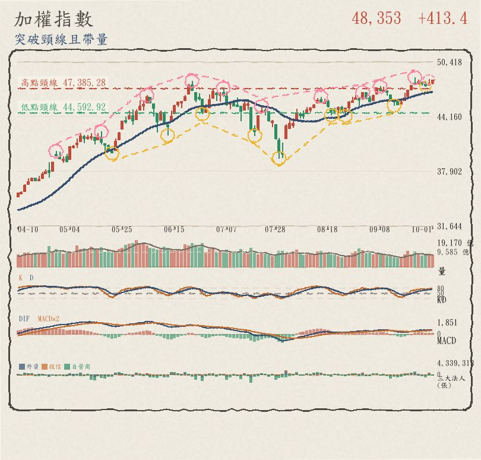
圖說：加權指數日 K（與個股圖相同標記）：黃圈＝轉折低點、粉圈＝轉折高點、虛線小圈＝還沒確認的轉折、藍線＝月線 MA20、水平虛線＝高點／低點頸線。最後一根是資料日當天。
本區塊為公開資料的技術面觀察，不構成投資建議，
不報牌、不預測、不下買賣決策。成交金額為集中市場總成交金額（含 ETF／權證），
與頁首摘要的「上市個股成交金額」口徑不同。標籤是統計，不是評分、也不是推薦。
上市 vs 上櫃（同期快篩）
加權 +0.86% vs 櫃買 +0.42%（同向） → 同向
（兩個市場分開寫，不合併成一個數字；櫃買為 TPEX 公開資料）
櫃買歷史：TPEX 逐日回補 130 根；來源：櫃買中心 www/zh-tw/indexInfo/sectinx（逐日，官方；OpenAPI tpex_index 只回當月）
（TPEX OpenAPI 只回當月，故逐日回補；歷史不足就不算該條均線並標「資料不足」，不用錯數字）
近 20 個交易日大盤狀態回溯（最新在上）（點開看逐日主狀態／量比／量價象限）
用同一支程式回算最近 20 個交易日（主狀態 S1~S8 與量比 20 皆為當日收盤當時的判定，
不是事後調整）；量比 20 未公布的日子寫「—」。
好條件最多的（前 10）
不好條件最多的（前 10）
好條件（8 項）：站上月線、月線向上、底底高、頭頭高、突破頸線、相對大盤強、攻擊量（量增＋上漲）、守住今日高檔（距今日高點 1% 內）。
不好條件（8 項）：跌破前低、今日下跌、相對大盤弱、在月線之下、量增下跌（出貨）、貼近今日低點（1% 內）、跌破昨日低點、月線下彎。
兩邊都是同一組日線資料＋盤中即時價算出來的「符合項目數」，只是把方向相反的條件分開數；
條件數不是評分或推薦，不構成投資建議。
盤中爆量（估量比 ≥ 1.5）（31 上市 19／上櫃 12）
今日疲弱（跌幅前 10）（10 上市 7／上櫃 3）
逐檔（70 檔，依盤中成交金額排序）
國巨* 2327 上市
629 +27.0（+4.49%）
高點墊高、底部不穩 盤中成交值 591.45 億・全榜第 1 名（上市第 1 名）・相對大盤 +4.24
好條件 6/8：站上月線、月線向上、頭頭高、突破頸線、相對大盤強、攻擊量（量增＋上漲）
不好條件 0/8：無
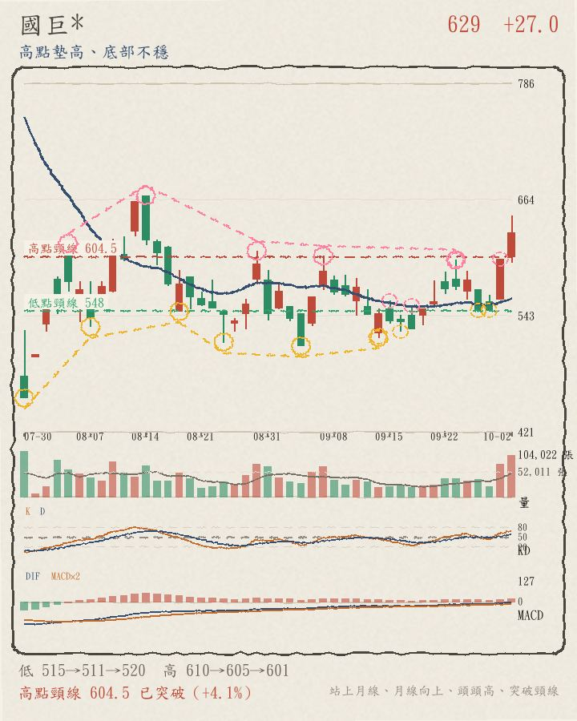
12:30 盤中 629（+4.49%），比加權指數強 4.24 個百分點、站上月線 556.3，已突破高點頸線 604.5，高點還在墊高（但底部沒同步墊高）。
- 月線位置：現價 629 在月線 556.3 之上（+13.1%）；5 日線 570.2 也在月線之上（短均在上）；月線向上
- 量能：以已過交易時間推估，今天成交量約是 20 日均量的 3.50 倍（爆量），比 20 日均量大不少；上漲又量增，量價配合
- 關鍵價位：高點頸線 604.5 已站上；前一交易日高點 602（高於 4.5%）；今天盤中高點 647（低於 2.8%）；今天盤中低點 598（高於 5.2%）
- 轉折結構：高點 610、605、601 墊高（頭頭高），但低點 515、511、520 沒有同步墊高；還沒確認的轉折低點 09-29 548、09-30 548；還沒確認的轉折高點 09-23 601、10-01 602（圖上虛線小圈）
臻鼎-KY 4958 上市
561 +51.0（+10.00%）
上升趨勢（底底高＋頭頭高） 盤中成交值 361.53 億・全榜第 2 名（上市第 2 名）・相對大盤 +9.75
好條件 7/8：站上月線、月線向上、底底高、頭頭高、突破頸線、相對大盤強、攻擊量（量增＋上漲）
不好條件 0/8：無
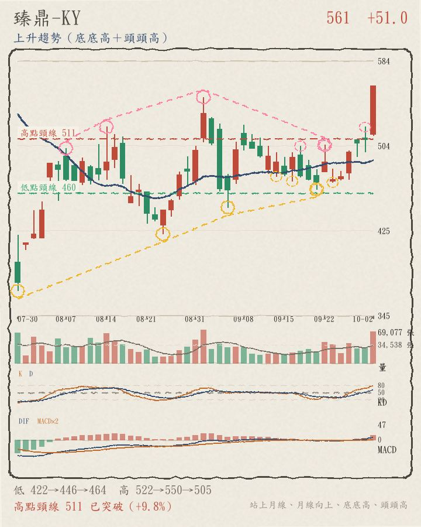
12:30 盤中 561（+10.00%），比加權指數強 9.75 個百分點、站上月線 488.2，已突破高點頸線 511，轉折結構仍是底底高＋頭頭高。
- 月線位置：現價 561 在月線 488.2 之上（+14.9%）；5 日線 492.8 也在月線之上（短均在上）；月線向上
- 量能：以已過交易時間推估，今天成交量約是 20 日均量的 2.78 倍（爆量），比 20 日均量大不少；上漲又量增，量價配合
- 關鍵價位：高點頸線 511 已站上；前一交易日高點 522（高於 7.5%）；今天盤中高點 561（高於 0.0%）；今天盤中低點 514（高於 9.1%）
- 轉折結構：低點 421.5、446.5、463.5 一路墊高、高點 522、550、505 也一路墊高，是底底高＋頭頭高；還沒確認的轉折低點 09-21 463.5、09-23 470；還沒確認的轉折高點 09-22 505、10-01 522（圖上虛線小圈）
友達 2409 上市
39.65 +1.4（+3.52%）
高點墊高、底部不穩 盤中成交值 238.96 億・全榜第 3 名（上市第 3 名）・相對大盤 +3.27
好條件 6/8：站上月線、月線向上、頭頭高、突破頸線、相對大盤強、攻擊量（量增＋上漲）
不好條件 0/8：無
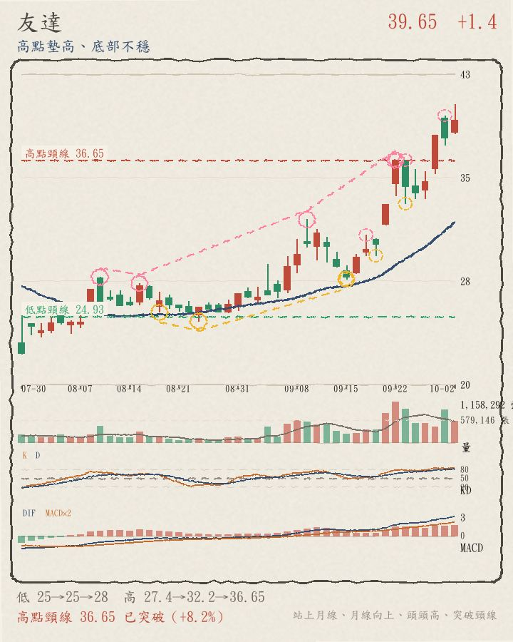
12:30 盤中 39.65（+3.52%），比加權指數強 3.27 個百分點、站上月線 31.355，已突破高點頸線 36.65，高點還在墊高（但底部沒同步墊高）。
- 月線位置：現價 39.65 在月線 31.355 之上（+26.5%）；5 日線 36.16 也在月線之上（短均在上）；月線向上
- 量能：以已過交易時間推估，今天成交量約是 20 日均量的 1.62 倍（爆量），比 20 日均量大不少；上漲又量增，量價配合
- 關鍵價位：高點頸線 36.65 已站上；前一交易日高點 40（低於 0.9%）；今天盤中高點 40.85（低於 2.9%）；今天盤中低點 38.65（高於 2.6%）
- 轉折結構：高點 27.4、32.2、36.65 墊高（頭頭高），但低點 25.25、24.6、27.75 沒有同步墊高；還沒確認的轉折低點 09-18 29.5、09-23 33.4；還沒確認的轉折高點 09-23 36.65、10-01 40（圖上虛線小圈）
台積電 2330 上市
2500 -10.0（-0.40%）
區間或轉弱 盤中成交值 235.62 億・全榜第 4 名（上市第 4 名）・相對大盤 -0.65
好條件 4/8：站上月線、月線向上、突破頸線、守住今日高檔（距今日高點 1% 內）
不好條件 3/8：今日下跌、相對大盤弱、貼近今日低點（1% 內）
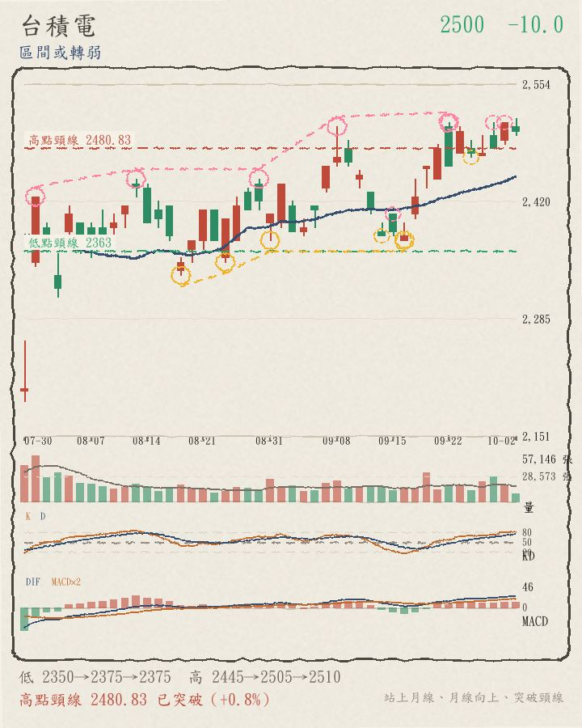
12:30 盤中 2500（-0.40%），比加權指數弱 0.65 個百分點、站上月線 2442.5，已突破高點頸線 2480.83，轉折還沒走出明顯方向。
- 月線位置：現價 2500 在月線 2442.5 之上（+2.4%）；5 日線 2488 也在月線之上（短均在上）；月線向上
- 量能：以已過交易時間推估，今天成交量約是 20 日均量的 0.63 倍（量縮），比 20 日均量少很多
- 關鍵價位：高點頸線 2480.83 已站上；前一交易日高點 2510（低於 0.4%）；今天盤中高點 2515（低於 0.6%）；今天盤中低點 2495（高於 0.2%）
- 轉折結構：低點 2350、2375、2375 與高點 2445、2505、2510 都沒有明顯遞增，屬於區間震盪或轉弱；還沒確認的轉折低點 09-16 2375、09-24 2470；還沒確認的轉折高點 09-30 2510、10-01 2510（圖上虛線小圈）
南電 8046 上市
1475 +55.0（+3.87%）
上升趨勢（底底高＋頭頭高） 盤中成交值 207.1 億・全榜第 5 名（上市第 5 名）・相對大盤 +3.62
好條件 8/8：站上月線、月線向上、底底高、頭頭高、突破頸線、相對大盤強、攻擊量（量增＋上漲）、守住今日高檔（距今日高點 1% 內）
不好條件 0/8：無
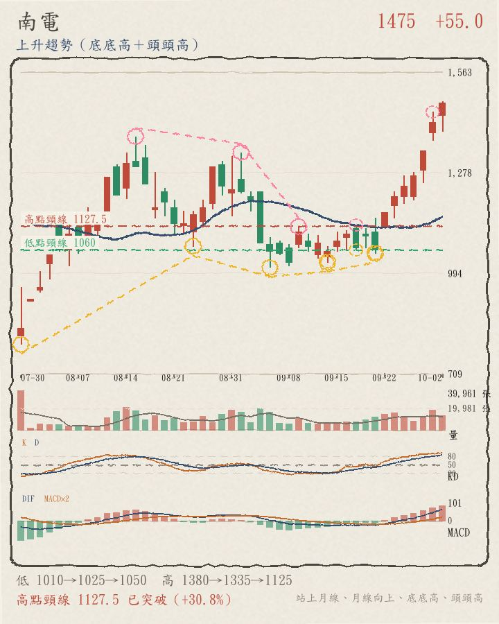
12:30 盤中 1475（+3.87%），比加權指數強 3.62 個百分點、站上月線 1139.25，已突破高點頸線 1127.5，轉折結構仍是底底高＋頭頭高。
- 月線位置：現價 1475 在月線 1139.25 之上（+29.5%）；5 日線 1296 也在月線之上（短均在上）；月線向上
- 量能：以已過交易時間推估，今天成交量約是 20 日均量的 1.62 倍（爆量），比 20 日均量大不少；上漲又量增，量價配合
- 關鍵價位：高點頸線 1127.5 已站上；前一交易日高點 1450（高於 1.7%）；今天盤中高點 1480（低於 0.3%）；今天盤中低點 1395（高於 5.7%）
- 轉折結構：低點 1010、1025、1050 一路墊高、高點 1380、1335、1125 也一路墊高，是底底高＋頭頭高；還沒確認的轉折低點 09-17 1060、09-21 1050；還沒確認的轉折高點 09-17 1130、10-01 1450（圖上虛線小圈）
華新科 2492 上市
361.5 +32.5（+9.88%）
上升趨勢（底底高＋頭頭高） 盤中成交值 196.58 億・全榜第 6 名（上市第 6 名）・相對大盤 +9.63
好條件 7/8：站上月線、月線向上、底底高、頭頭高、突破頸線、相對大盤強、攻擊量（量增＋上漲）
不好條件 0/8：無
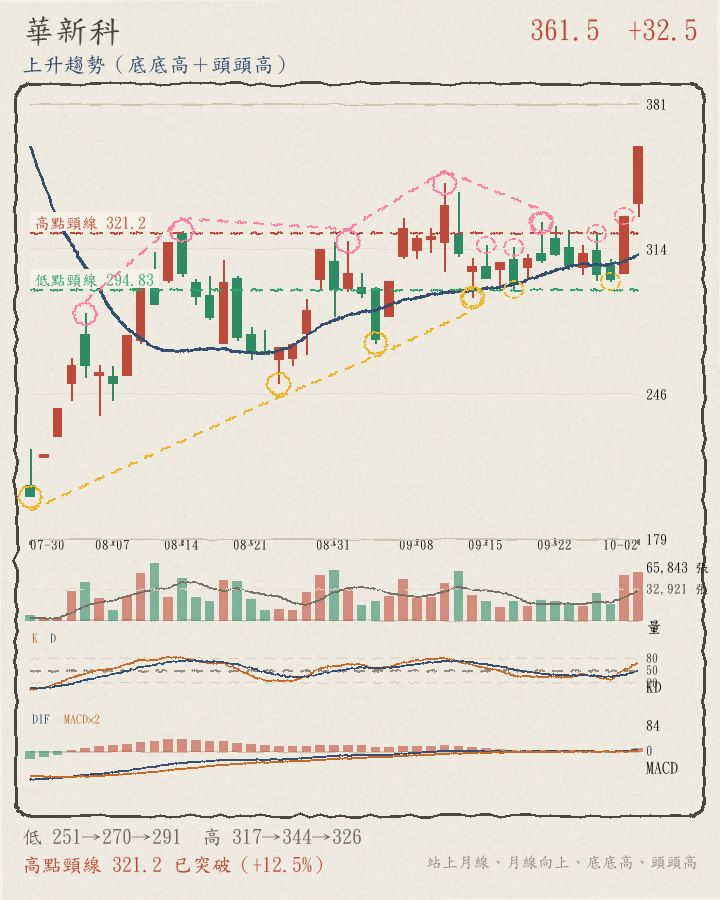
12:30 盤中 361.5（+9.88%），比加權指數強 9.63 個百分點、站上月線 307.825，已突破高點頸線 321.2，轉折結構仍是底底高＋頭頭高。
- 月線位置：現價 361.5 在月線 307.825 之上（+17.4%）；5 日線 309.6 也在月線之上（短均在上）；月線向上
- 量能：以已過交易時間推估，今天成交量約是 20 日均量的 2.67 倍（爆量），比 20 日均量大不少；上漲又量增，量價配合
- 關鍵價位：高點頸線 321.2 已站上；前一交易日高點 329（高於 9.9%）；今天盤中高點 361.5（高於 0.0%）；今天盤中低點 329（高於 9.9%）
- 轉折結構：低點 251、270、291 一路墊高、高點 317、344、326 也一路墊高，是底底高＋頭頭高；還沒確認的轉折低點 09-17 295、09-30 298.5；還沒確認的轉折高點 09-29 321、10-01 329（圖上虛線小圈）
欣興 3037 上市
1295 +80.0（+6.58%）
高點墊高、底部不穩 盤中成交值 188.51 億・全榜第 7 名（上市第 7 名）・相對大盤 +6.33
好條件 6/8：站上月線、月線向上、頭頭高、突破頸線、相對大盤強、守住今日高檔（距今日高點 1% 內）
不好條件 0/8：無
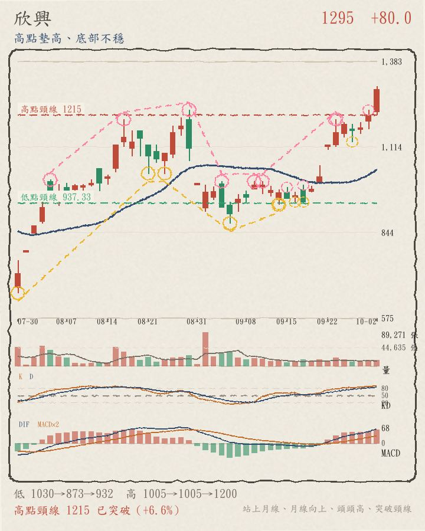
12:30 盤中 1295（+6.58%），比加權指數強 6.33 個百分點、站上月線 1025.4，已突破高點頸線 1215，高點還在墊高（但底部沒同步墊高）。
- 月線位置：現價 1295 在月線 1025.4 之上（+26.3%）；5 日線 1180 也在月線之上（短均在上）；月線向上
- 量能：以已過交易時間推估，今天成交量約是 20 日均量的 0.89 倍（量平），比 20 日均量少一些
- 關鍵價位：高點頸線 1215 已站上；前一交易日高點 1230（高於 5.3%）；今天盤中高點 1305（低於 0.8%）；今天盤中低點 1215（高於 6.6%）
- 轉折結構：高點 1005、1005、1200 墊高（頭頭高），但低點 1030、873、932 沒有同步墊高；還沒確認的轉折低點 09-17 940、09-29 1130；還沒確認的轉折高點 09-23 1200、10-01 1230（圖上虛線小圈）
環球晶 6488 上櫃
1190 +105.0（+9.68%）
高點墊高、底部不穩 盤中成交值 181.86 億・全榜第 8 名（上櫃第 1 名）・相對大盤 +9.43
好條件 6/8：站上月線、月線向上、頭頭高、突破頸線、相對大盤強、攻擊量（量增＋上漲）
不好條件 0/8：無
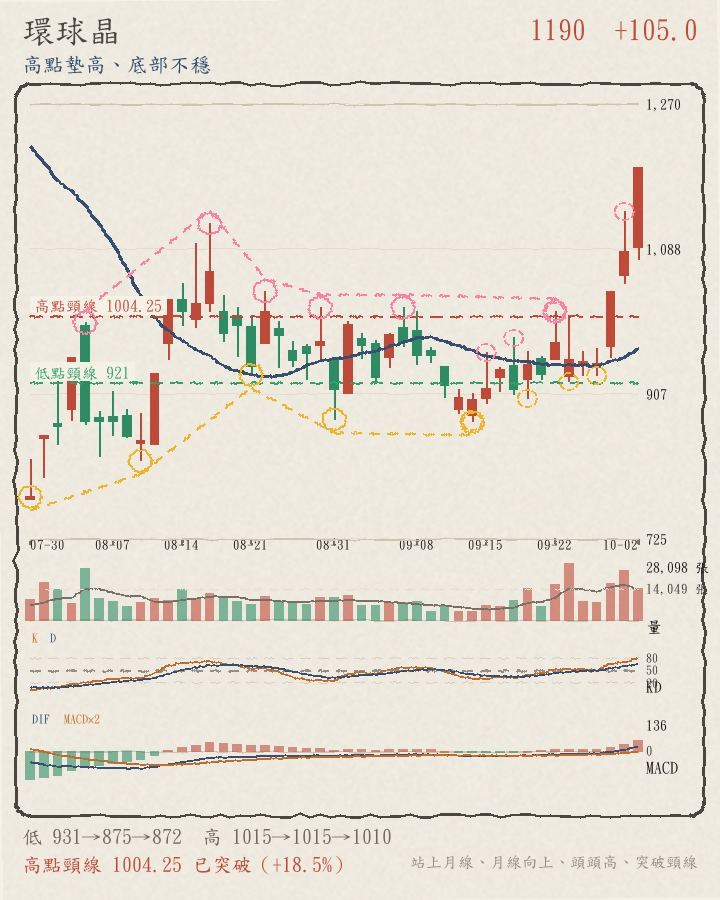
12:30 盤中 1190（+9.68%），比加權指數強 9.43 個百分點、站上月線 952.35，已突破高點頸線 1004.25，高點還在墊高（但底部沒同步墊高）。
- 月線位置：現價 1190 在月線 952.35 之上（+24.9%）；5 日線 992.6 也在月線之上（短均在上）；月線向上
- 量能：以已過交易時間推估，今天成交量約是 20 日均量的 1.97 倍（爆量），比 20 日均量大不少；上漲又量增，量價配合
- 關鍵價位：高點頸線 1004.25 已站上；前一交易日高點 1135（高於 4.8%）；今天盤中高點 1190（高於 0.0%）；今天盤中低點 1075（高於 10.7%）
- 轉折結構：高點 1015、1015、1010 墊高（頭頭高），但低點 931、875、872 沒有同步墊高；還沒確認的轉折低點 09-23 922、09-29 930；還沒確認的轉折高點 09-22 1010、10-01 1135（圖上虛線小圈）
合晶 6182 上櫃
135.5 +5.5（+4.23%）
高點墊高、底部不穩 盤中成交值 170.13 億・全榜第 9 名（上櫃第 2 名）・相對大盤 +3.98
好條件 6/8：站上月線、月線向上、頭頭高、突破頸線、相對大盤強、攻擊量（量增＋上漲）
不好條件 0/8：無
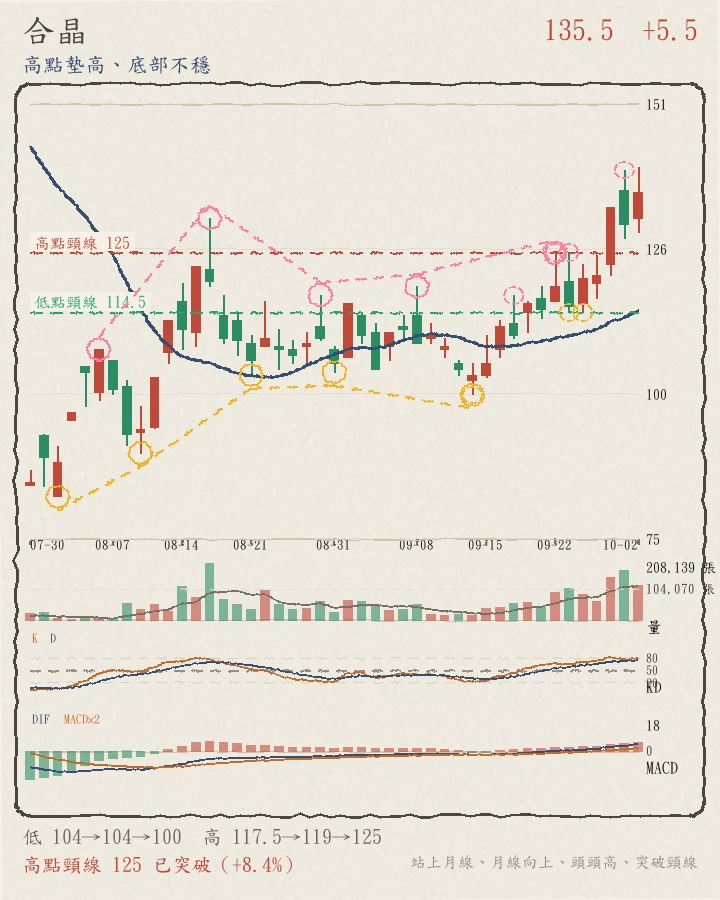
12:30 盤中 135.5（+4.23%），比加權指數強 3.98 個百分點、站上月線 113.575，已突破高點頸線 125，高點還在墊高（但底部沒同步墊高）。
- 月線位置：現價 135.5 在月線 113.575 之上（+19.3%）；5 日線 124 也在月線之上（短均在上）；月線向上
- 量能：以已過交易時間推估，今天成交量約是 20 日均量的 2.72 倍（爆量），比 20 日均量大不少；上漲又量增，量價配合
- 關鍵價位：高點頸線 125 已站上；前一交易日高點 139.5（低於 2.9%）；今天盤中高點 140（低於 3.2%）；今天盤中低點 128.5（高於 5.4%）
- 轉折結構：高點 117.5、119、125 墊高（頭頭高），但低點 103.5、104、100 沒有同步墊高；還沒確認的轉折低點 09-23 114.5、09-24 114.5；還沒確認的轉折高點 09-23 125、10-01 139.5（圖上虛線小圈）
台燿 6274 上櫃
1595 +60.0（+3.91%）
高點墊高、底部不穩 盤中成交值 160.89 億・全榜第 10 名（上櫃第 3 名）・相對大盤 +3.66
好條件 6/8：站上月線、月線向上、頭頭高、突破頸線、相對大盤強、攻擊量（量增＋上漲）
不好條件 0/8：無
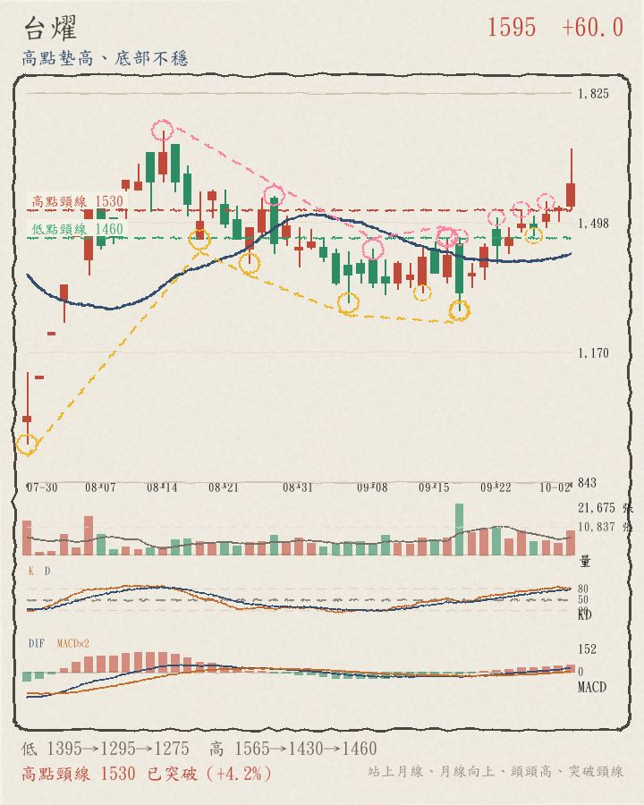
12:30 盤中 1595（+3.91%），比加權指數強 3.66 個百分點、站上月線 1409.75，已突破高點頸線 1530，高點還在墊高（但底部沒同步墊高）。
- 月線位置：現價 1595 在月線 1409.75 之上（+13.1%）；5 日線 1499 也在月線之上（短均在上）；月線向上
- 量能：以已過交易時間推估，今天成交量約是 20 日均量的 1.75 倍（爆量），比 20 日均量大不少；上漲又量增，量價配合
- 關鍵價位：高點頸線 1530 已站上；前一交易日高點 1540（高於 3.6%）；今天盤中高點 1685（低於 5.3%）；今天盤中低點 1530（高於 4.2%）
- 轉折結構：高點 1565、1430、1460 墊高（頭頭高），但低點 1395、1295、1275 沒有同步墊高；還沒確認的轉折低點 09-17 1275、09-29 1465；還沒確認的轉折高點 09-24 1530、09-30 1550（圖上虛線小圈）
景碩 3189 上市
1055 +45.0（+4.46%）
高點墊高、底部不穩 盤中成交值 158.45 億・全榜第 11 名（上市第 8 名）・相對大盤 +4.21
好條件 5/8：站上月線、月線向上、頭頭高、突破頸線、相對大盤強
不好條件 0/8：無
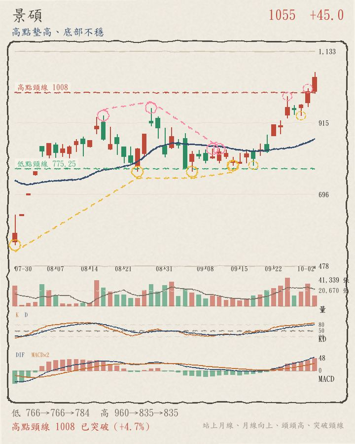
12:30 盤中 1055（+4.46%），比加權指數強 4.21 個百分點、站上月線 855.2，已突破高點頸線 1008，高點還在墊高（但底部沒同步墊高）。
- 月線位置：現價 1055 在月線 855.2 之上（+23.4%）；5 日線 960.6 也在月線之上（短均在上）；月線向上
- 量能：以已過交易時間推估，今天成交量約是 20 日均量的 1.03 倍（量平），跟 20 日均量差不多
- 關鍵價位：高點頸線 1008 已站上；前一交易日高點 1020（高於 3.4%）；今天盤中高點 1070（低於 1.4%）；今天盤中低點 1005（高於 5.0%）
- 轉折結構：高點 960、835、835 墊高（頭頭高），但低點 766、766、784 沒有同步墊高；還沒確認的轉折低點 09-17 785、09-30 937；還沒確認的轉折高點 09-24 996、10-01 1020（圖上虛線小圈）
穩懋 3105 上櫃
591 +53.0（+9.85%）
高點墊高、底部不穩 盤中成交值 156.41 億・全榜第 12 名（上櫃第 4 名）・相對大盤 +9.60
好條件 6/8：站上月線、月線向上、頭頭高、突破頸線、相對大盤強、攻擊量（量增＋上漲）
不好條件 0/8：無
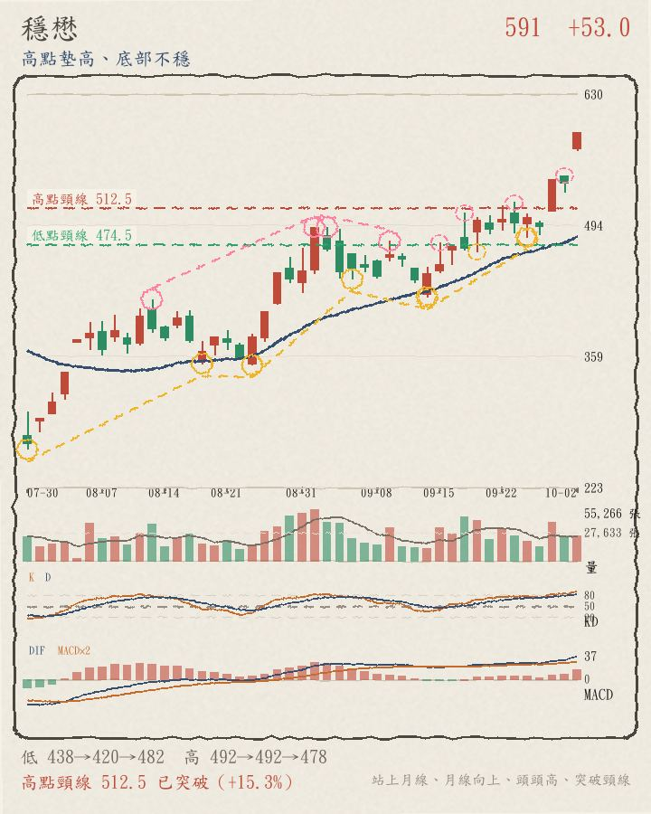
12:30 盤中 591（+9.85%），比加權指數強 9.60 個百分點、站上月線 476.275，已突破高點頸線 512.5，高點還在墊高（但底部沒同步墊高）。
- 月線位置：現價 591 在月線 476.275 之上（+24.1%）；5 日線 514.4 也在月線之上（短均在上）；月線向上
- 量能：以已過交易時間推估，今天成交量約是 20 日均量的 1.15 倍（量增），比 20 日均量大不少；上漲又量增，量價配合
- 關鍵價位：高點頸線 512.5 已站上；前一交易日高點 546（高於 8.2%）；今天盤中高點 591（高於 0.0%）；今天盤中低點 572（高於 3.3%）
- 轉折結構：高點 492、492、478 墊高（頭頭高），但低點 438.5、420、482 沒有同步墊高；還沒確認的轉折低點 09-18 467、09-24 482；還沒確認的轉折高點 09-23 518、10-01 546（圖上虛線小圈）
聯茂 6213 上市
689 +47.0（+7.32%）
高點墊高、底部不穩 盤中成交值 144.56 億・全榜第 13 名（上市第 9 名）・相對大盤 +7.07
好條件 6/8：站上月線、月線向上、頭頭高、突破頸線、相對大盤強、攻擊量（量增＋上漲）
不好條件 0/8：無
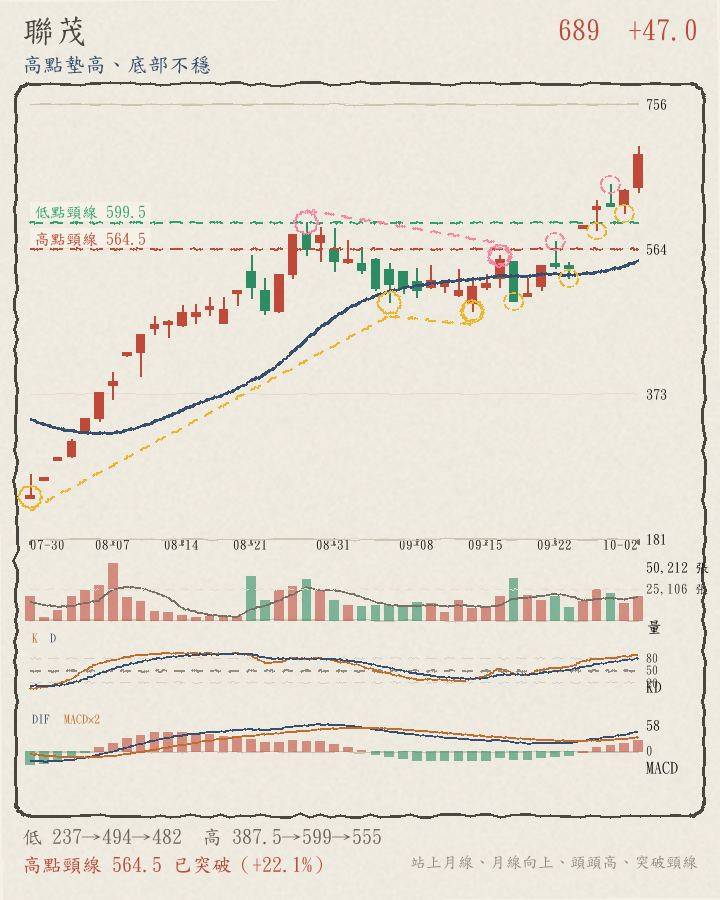
12:30 盤中 689（+7.32%），比加權指數強 7.07 個百分點、站上月線 541.45，已突破高點頸線 564.5，高點還在墊高（但底部沒同步墊高）。
- 月線位置：現價 689 在月線 541.45 之上（+27.2%）；5 日線 604.2 也在月線之上（短均在上）；月線向上
- 量能：以已過交易時間推估，今天成交量約是 20 日均量的 1.61 倍（爆量），比 20 日均量大不少；上漲又量增，量價配合
- 關鍵價位：高點頸線 564.5 已站上；前一交易日高點 643（高於 7.2%）；今天盤中高點 700（低於 1.6%）；今天盤中低點 639（高於 7.8%）
- 轉折結構：高點 387.5、599、555 墊高（頭頭高），但低點 237、493.5、482 沒有同步墊高；還沒確認的轉折低點 09-29 588、10-01 611；還沒確認的轉折高點 09-22 574、09-30 649（圖上虛線小圈）
南亞科 2408 上市
526 +7.0（+1.35%）
區間或轉弱 盤中成交值 142.4 億・全榜第 14 名（上市第 10 名）・相對大盤 +1.10
好條件 2/8：站上月線、相對大盤強
不好條件 2/8：貼近今日低點（1% 內）、月線下彎
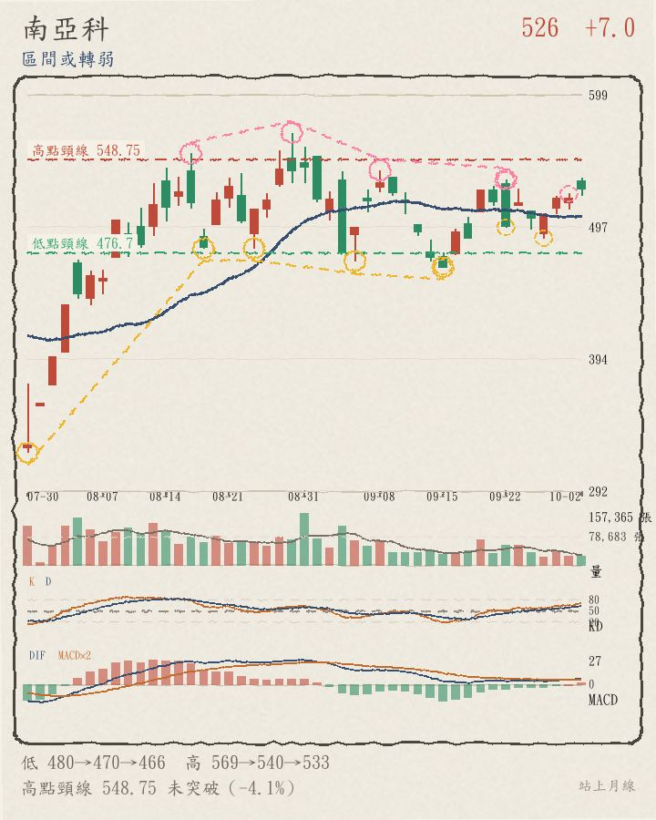
12:30 盤中 526（+1.35%），比加權指數強 1.10 個百分點、站上月線 504.475，離高點頸線 548.75 還差 4.1%，轉折還沒走出明顯方向。
- 月線位置：現價 526 在月線 504.475 之上（+4.3%）；5 日線 512.4 也在月線之上（短均在上）；月線向下
- 量能：以已過交易時間推估，今天成交量約是 20 日均量的 0.66 倍（量縮），比 20 日均量少很多；上漲但量縮，量價背離
- 關鍵價位：高點頸線 548.75 還沒突破，差 4.1%；前一交易日高點 522（高於 0.8%）；今天盤中高點 534（低於 1.5%）；今天盤中低點 521（高於 1.0%）
- 轉折結構：低點 480、470、465.5 與高點 569、540、533 都沒有明顯遞增，屬於區間震盪或轉弱；還沒確認的轉折低點 09-22 496、09-29 488；還沒確認的轉折高點 09-22 533、10-01 522（圖上虛線小圈）
聯發科 2454 上市
4930 -50.0（-1.00%）
高點墊高、底部不穩 盤中成交值 138.19 億・全榜第 15 名（上市第 11 名）・相對大盤 -1.25
好條件 4/8：站上月線、月線向上、頭頭高、守住今日高檔（距今日高點 1% 內）
不好條件 2/8：今日下跌、相對大盤弱
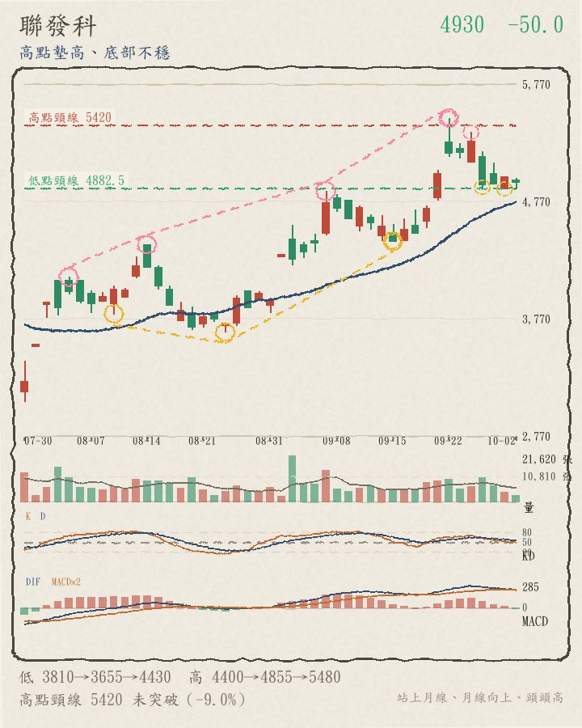
12:30 盤中 4930（-1.00%），比加權指數弱 1.25 個百分點、站上月線 4731.5，離高點頸線 5420 還差 9.0%，高點還在墊高（但底部沒同步墊高）。
- 月線位置：現價 4930 在月線 4731.5 之上（+4.2%）；5 日線 5056 也在月線之上（短均在上）；月線向上
- 量能：以已過交易時間推估，今天成交量約是 20 日均量的 0.44 倍（量縮），比 20 日均量少很多
- 關鍵價位：高點頸線 5420 還沒突破，差 9.0%；前一交易日高點 4980（低於 1.0%）；今天盤中高點 4970（低於 0.8%）；今天盤中低點 4880（高於 1.0%）
- 轉折結構：高點 4400、4855、5480 墊高（頭頭高），但低點 3810、3655、4430 沒有同步墊高；還沒確認的轉折低點 09-29 4890、10-01 4875；還沒確認的轉折高點 09-22 5480、09-24 5360（圖上虛線小圈）
聯亞 3081 上櫃
2925 +265.0（+9.96%）
區間或轉弱 盤中成交值 124.2 億・全榜第 16 名（上櫃第 5 名）・相對大盤 +9.71
好條件 4/8：站上月線、突破頸線、相對大盤強、攻擊量（量增＋上漲）
不好條件 1/8：月線下彎
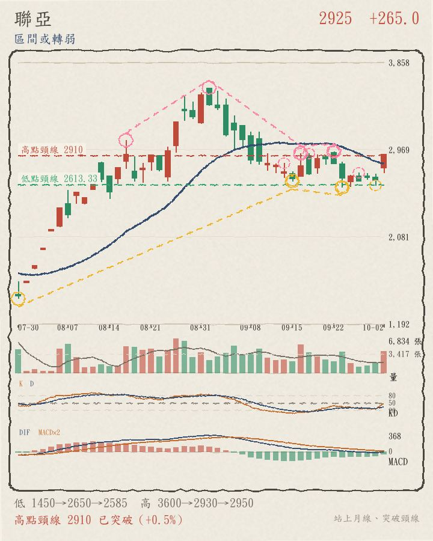
12:30 盤中 2925（+9.96%），比加權指數強 9.71 個百分點、站上月線 2851，已突破高點頸線 2910，轉折還沒走出明顯方向。
- 月線位置：現價 2925 在月線 2851 之上（+2.6%）；5 日線 2677 也在月線之下（短均在下）；月線向下
- 量能：以已過交易時間推估，今天成交量約是 20 日均量的 1.72 倍（爆量），比 20 日均量大不少；上漲又量增，量價配合
- 關鍵價位：高點頸線 2910 已站上；前一交易日高點 2720（高於 7.5%）；今天盤中高點 2925（高於 0.0%）；今天盤中低點 2735（高於 6.9%）
- 轉折結構：低點 1450、2650、2585 與高點 3600、2930、2950 都沒有明顯遞增，屬於區間震盪或轉弱；還沒確認的轉折低點 09-23 2585、10-01 2605；還沒確認的轉折高點 09-22 2950、09-29 2735（圖上虛線小圈）
聯電 2303 上市
160.5 -1.0（-0.62%）
上升趨勢（底底高＋頭頭高） 盤中成交值 123.45 億・全榜第 17 名（上市第 12 名）・相對大盤 -0.87
好條件 4/8：站上月線、月線向上、底底高、頭頭高
不好條件 2/8：今日下跌、相對大盤弱
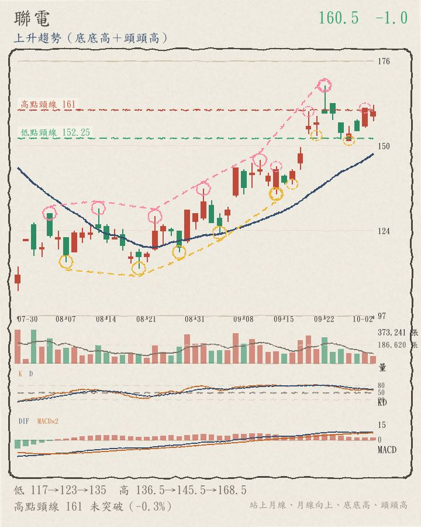
12:30 盤中 160.5（-0.62%），比加權指數弱 0.87 個百分點、站上月線 145.625，離高點頸線 161 還差 0.3%，轉折結構仍是底底高＋頭頭高。
- 月線位置：現價 160.5 在月線 145.625 之上（+10.2%）；5 日線 156.7 也在月線之上（短均在上）；月線向上
- 量能：以已過交易時間推估，今天成交量約是 20 日均量的 0.55 倍（量縮），比 20 日均量少很多
- 關鍵價位：高點頸線 161 還沒突破，差 0.3%；前一交易日高點 161.5（低於 0.6%）；今天盤中高點 162.5（低於 1.2%）；今天盤中低點 157.5（高於 1.9%）
- 轉折結構：低點 117、123、135 一路墊高、高點 136.5、145.5、168.5 也一路墊高，是底底高＋頭頭高；還沒確認的轉折低點 09-21 153、09-29 151.5；還沒確認的轉折高點 09-22 168.5、10-01 161.5（圖上虛線小圈）
禾伸堂 3026 上市
849 -3.0（-0.35%）
上升趨勢（底底高＋頭頭高） 盤中成交值 118.95 億・全榜第 18 名（上市第 13 名）・相對大盤 -0.60
好條件 4/8：站上月線、月線向上、底底高、頭頭高
不好條件 3/8：今日下跌、相對大盤弱、量增下跌（出貨）
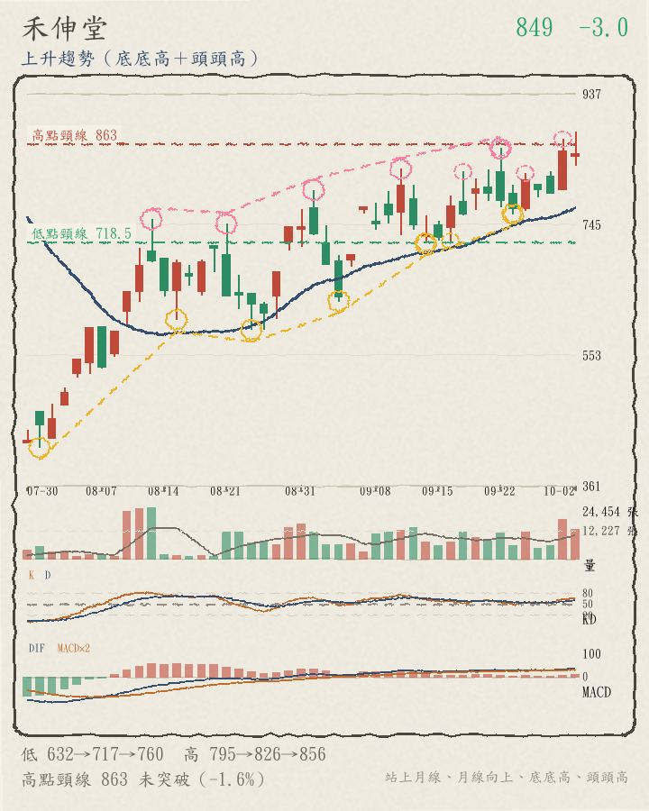
12:30 盤中 849（-0.35%），比加權指數弱 0.60 個百分點、站上月線 761.1，離高點頸線 863 還差 1.6%，轉折結構仍是底底高＋頭頭高。
- 月線位置：現價 849 在月線 761.1 之上（+11.6%）；5 日線 803.4 也在月線之上（短均在上）；月線向上
- 量能：以已過交易時間推估，今天成交量約是 20 日均量的 1.95 倍（爆量），比 20 日均量大不少；下跌卻量增，量價背離
- 關鍵價位：高點頸線 863 還沒突破，差 1.6%；前一交易日高點 870（低於 2.4%）；今天盤中高點 881（低於 3.6%）；今天盤中低點 831（高於 2.2%）
- 轉折結構：低點 632、717、760 一路墊高、高點 795、826、856 也一路墊高，是底底高＋頭頭高；還沒確認的轉折低點 09-16 720、09-23 760；還沒確認的轉折高點 09-24 820、10-01 870（圖上虛線小圈）
力積電 6770 上市
76.7 +2.2（+2.95%）
高點墊高、底部不穩 盤中成交值 118.86 億・全榜第 19 名（上市第 14 名）・相對大盤 +2.70
好條件 6/8：站上月線、月線向上、頭頭高、突破頸線、相對大盤強、攻擊量（量增＋上漲）
不好條件 0/8：無
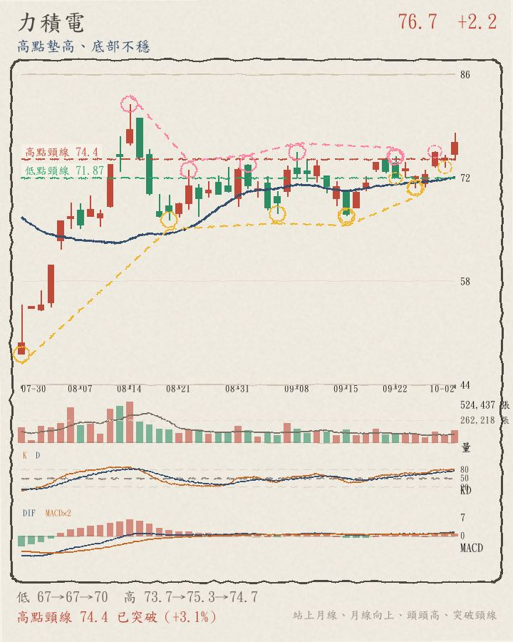
12:30 盤中 76.7（+2.95%），比加權指數強 2.70 個百分點、站上月線 71.65，已突破高點頸線 74.4，高點還在墊高（但底部沒同步墊高）。
- 月線位置：現價 76.7 在月線 71.65 之上（+7.0%）；5 日線 73.44 也在月線之上（短均在上）；月線向上
- 量能：以已過交易時間推估，今天成交量約是 20 日均量的 1.62 倍（爆量），比 20 日均量大不少；上漲又量增，量價配合
- 關鍵價位：高點頸線 74.4 已站上；前一交易日高點 74.9（高於 2.4%）；今天盤中高點 77.9（低於 1.5%）；今天盤中低點 74.2（高於 3.4%）
- 轉折結構：高點 73.7、75.3、74.7 墊高（頭頭高），但低點 67、66.7、70.5 沒有同步墊高；還沒確認的轉折低點 09-24 70.5、10-01 73.3；還沒確認的轉折高點 09-22 74.7、09-30 75.4（圖上虛線小圈）
南茂 8150 上市
127 +11.5（+9.96%）
區間或轉弱 盤中成交值 118.19 億・全榜第 20 名（上市第 15 名）・相對大盤 +9.71
好條件 5/8：站上月線、月線向上、突破頸線、相對大盤強、攻擊量（量增＋上漲）
不好條件 0/8：無
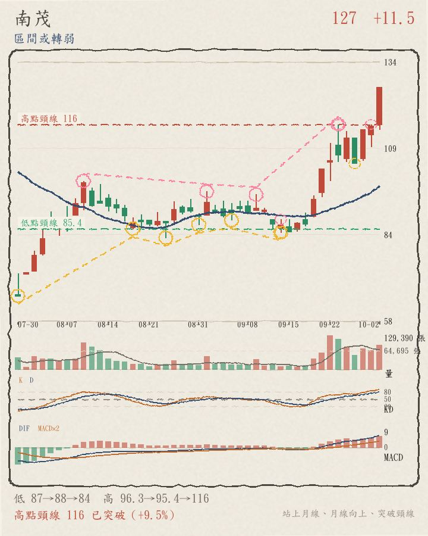
12:30 盤中 127（+9.96%），比加權指數強 9.71 個百分點、站上月線 96.045，已突破高點頸線 116，轉折還沒走出明顯方向。
- 月線位置：現價 127 在月線 96.045 之上（+32.2%）；5 日線 110.7 也在月線之上（短均在上）；月線向上
- 量能：以已過交易時間推估，今天成交量約是 20 日均量的 2.92 倍（爆量），比 20 日均量大不少；上漲又量增，量價配合
- 關鍵價位：高點頸線 116 已站上；前一交易日高點 116（高於 9.5%）；今天盤中高點 127（高於 0.0%）；今天盤中低點 114.5（高於 10.9%）
- 轉折結構：低點 86.6、87.9、84.3 與高點 96.3、95.4、116 都沒有明顯遞增，屬於區間震盪或轉弱；還沒確認的轉折低點 09-14 84.3、09-29 104.5；還沒確認的轉折高點 09-23 116、10-01 116（圖上虛線小圈）
華邦電 2344 上市
178.5 -1.5（-0.83%）
區間或轉弱 盤中成交值 100.38 億・全榜第 21 名（上市第 16 名）・相對大盤 -1.08
好條件 1/8：站上月線
不好條件 4/8：今日下跌、相對大盤弱、貼近今日低點（1% 內）、月線下彎
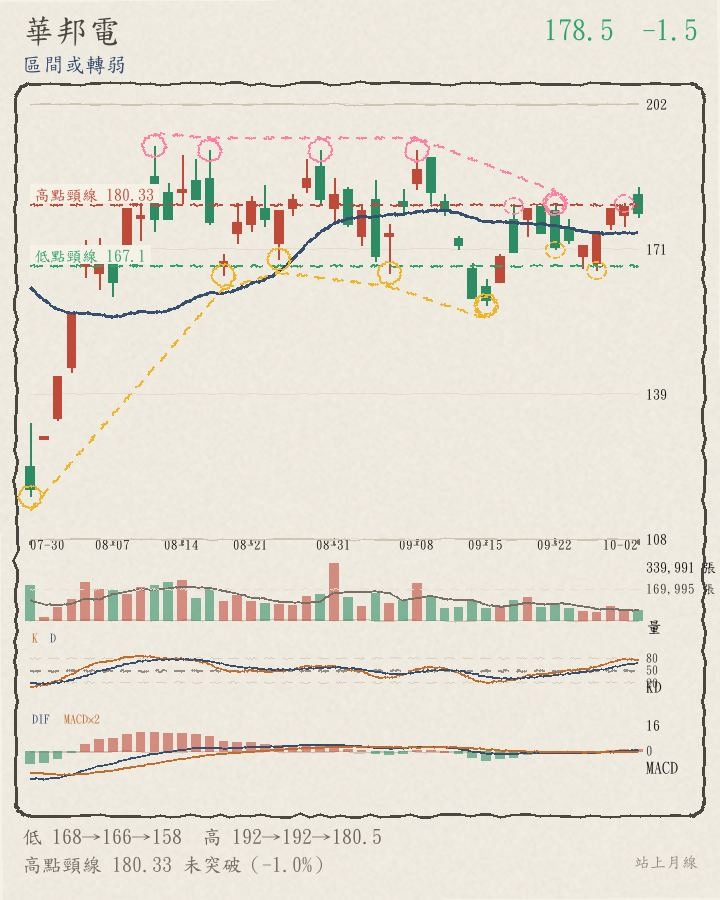
12:30 盤中 178.5（-0.83%），比加權指數弱 1.08 個百分點、站上月線 174.225，離高點頸線 180.33 還差 1.0%，轉折還沒走出明顯方向。
- 月線位置：現價 178.5 在月線 174.225 之上（+2.5%）；5 日線 175.5 也在月線之上（短均在上）；月線向下
- 量能：以已過交易時間推估，今天成交量約是 20 日均量的 0.71 倍（量平），比 20 日均量少很多
- 關鍵價位：高點頸線 180.33 還沒突破，差 1.0%；前一交易日高點 180.5（低於 1.1%）；今天盤中高點 184（低於 3.0%）；今天盤中低點 177.5（高於 0.6%）
- 轉折結構：低點 168.5、165.5、158.5 與高點 192、192、180.5 都沒有明顯遞增，屬於區間震盪或轉弱；還沒確認的轉折低點 09-22 170.5、09-29 166；還沒確認的轉折高點 09-22 180.5、10-01 180.5（圖上虛線小圈）
群創 3481 上市
52.6 +0.3（+0.57%）
高點墊高、底部不穩 盤中成交值 91.72 億・全榜第 22 名（上市第 17 名）・相對大盤 +0.32
好條件 6/8：站上月線、月線向上、頭頭高、突破頸線、相對大盤強、攻擊量（量增＋上漲）
不好條件 0/8：無
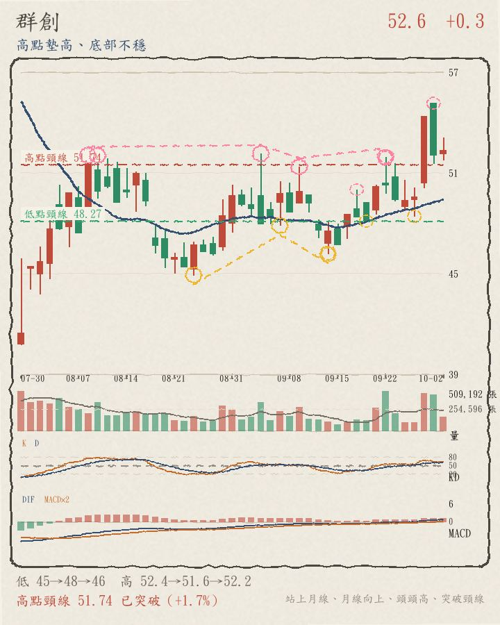
12:30 盤中 52.6（+0.57%），比加權指數強 0.32 個百分點、站上月線 49.412，已突破高點頸線 51.74，高點還在墊高（但底部沒同步墊高）。
- 月線位置：現價 52.6 在月線 49.412 之上（+6.5%）；5 日線 51.18 也在月線之上（短均在上）；月線向上
- 量能：以已過交易時間推估，今天成交量約是 20 日均量的 1.10 倍（量增），比 20 日均量大一些；上漲又量增，量價配合
- 關鍵價位：高點頸線 51.74 已站上；前一交易日高點 55.5（低於 5.2%）；今天盤中高點 53.4（低於 1.5%）；今天盤中低點 52（高於 1.2%）
- 轉折結構：高點 52.4、51.6、52.2 墊高（頭頭高），但低點 44.95、48、46.25 沒有同步墊高；還沒確認的轉折低點 09-18 48.25、09-29 48.55；還沒確認的轉折高點 09-22 52.2、10-01 55.5（圖上虛線小圈）
中美晶 5483 上櫃
219.5 +8.0（+3.78%）
高點墊高、底部不穩 盤中成交值 91.39 億・全榜第 23 名（上櫃第 6 名）・相對大盤 +3.53
好條件 6/8：站上月線、月線向上、頭頭高、突破頸線、相對大盤強、攻擊量（量增＋上漲）
不好條件 0/8：無
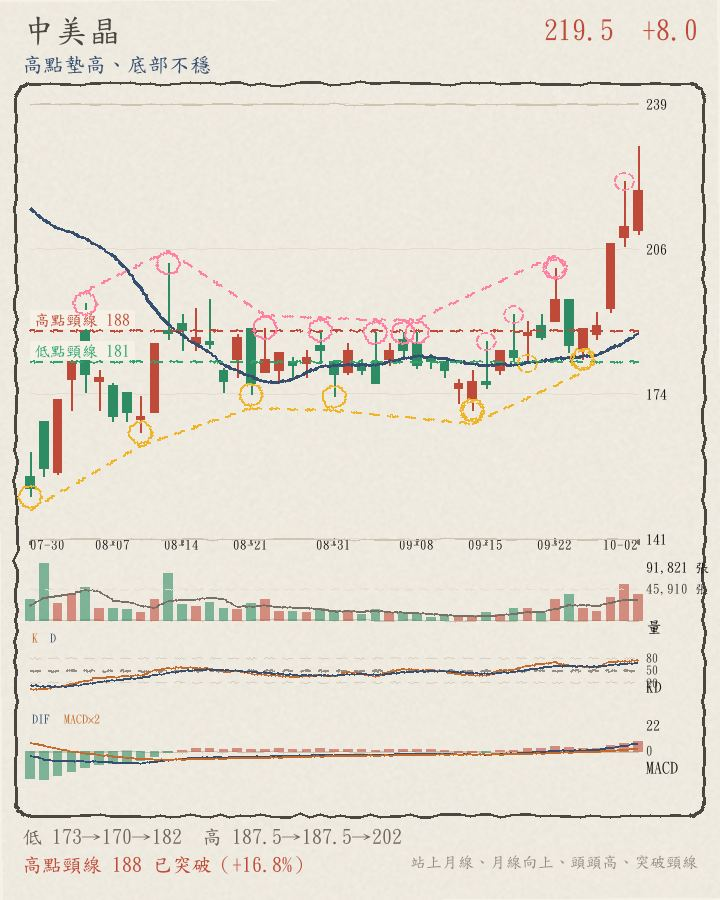
12:30 盤中 219.5（+3.78%），比加權指數強 3.53 個百分點、站上月線 185.3，已突破高點頸線 188，高點還在墊高（但底部沒同步墊高）。
- 月線位置：現價 219.5 在月線 185.3 之上（+18.5%）；5 日線 196.2 也在月線之上（短均在上）；月線向上
- 量能：以已過交易時間推估，今天成交量約是 20 日均量的 3.45 倍（爆量），比 20 日均量大不少；上漲又量增，量價配合
- 關鍵價位：高點頸線 188 已站上；前一交易日高點 221.5（低於 0.9%）；今天盤中高點 229.5（低於 4.4%）；今天盤中低點 209.5（高於 4.8%）
- 轉折結構：高點 187.5、187.5、202 墊高（頭頭高），但低點 173、170、181.5 沒有同步墊高；還沒確認的轉折低點 09-18 180.5、09-24 181.5；還沒確認的轉折高點 09-22 202、10-01 221.5（圖上虛線小圈）
台光電 2383 上市
5165 +190.0（+3.82%）
區間或轉弱 盤中成交值 88.94 億・全榜第 24 名（上市第 18 名）・相對大盤 +3.57
好條件 4/8：站上月線、相對大盤強、攻擊量（量增＋上漲）、守住今日高檔（距今日高點 1% 內）
不好條件 1/8：月線下彎
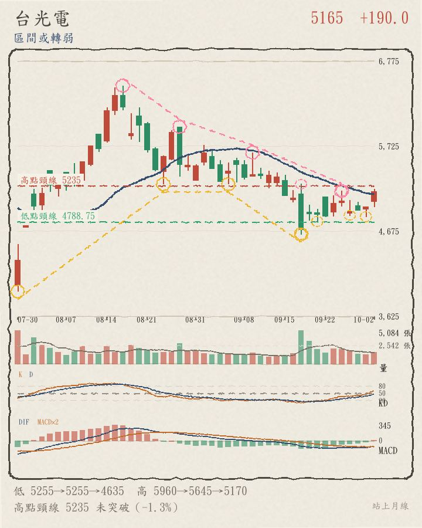
12:30 盤中 5165（+3.82%），比加權指數強 3.57 個百分點、站上月線 5144.25，離高點頸線 5235 還差 1.3%，轉折還沒走出明顯方向。
- 月線位置：現價 5165 在月線 5144.25 之上（+0.4%）；5 日線 4980 也在月線之下（短均在下）；月線向下
- 量能：以已過交易時間推估，今天成交量約是 20 日均量的 1.20 倍（量增），比 20 日均量大不少；上漲又量增，量價配合
- 關鍵價位：高點頸線 5235 還沒突破，差 1.3%；前一交易日高點 4975（高於 3.8%）；今天盤中高點 5190（低於 0.5%）；今天盤中低點 4975（高於 3.8%）
- 轉折結構：低點 5255、5255、4635 與高點 5960、5645、5170 都沒有明顯遞增，屬於區間震盪或轉弱；還沒確認的轉折低點 09-29 4870、10-01 4855；還沒確認的轉折高點 09-17 5255、09-24 5170（圖上虛線小圈）
南亞 1303 上市
260 +6.0（+2.36%）
高點墊高、底部不穩 盤中成交值 88.68 億・全榜第 25 名（上市第 19 名）・相對大盤 +2.11
好條件 6/8：站上月線、月線向上、頭頭高、突破頸線、相對大盤強、守住今日高檔（距今日高點 1% 內）
不好條件 0/8：無
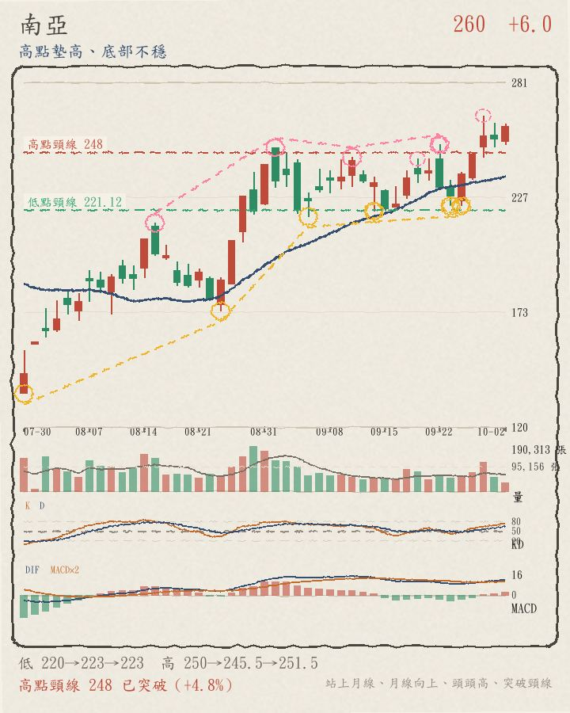
12:30 盤中 260（+2.36%），比加權指數強 2.11 個百分點、站上月線 235.55，已突破高點頸線 248，高點還在墊高（但底部沒同步墊高）。
- 月線位置：現價 260 在月線 235.55 之上（+10.4%）；5 日線 244.4 也在月線之上（短均在上）；月線向上
- 量能：以已過交易時間推估，今天成交量約是 20 日均量的 0.58 倍（量縮），比 20 日均量少很多；上漲但量縮，量價背離
- 關鍵價位：高點頸線 248 已站上；前一交易日高點 261.5（低於 0.6%）；今天盤中高點 261（低於 0.4%）；今天盤中低點 251.5（高於 3.4%）
- 轉折結構：高點 250、245.5、251.5 墊高（頭頭高），但低點 220.5、223、223 沒有同步墊高；還沒確認的轉折低點 09-23 223、09-24 223；還沒確認的轉折高點 09-22 251.5、09-30 265（圖上虛線小圈）
金居 8358 上櫃
522 +17.0（+3.37%）
底部墊高、未過前高 盤中成交值 86.55 億・全榜第 26 名（上櫃第 7 名）・相對大盤 +3.12
好條件 4/8：站上月線、底底高、相對大盤強、攻擊量（量增＋上漲）
不好條件 1/8：月線下彎
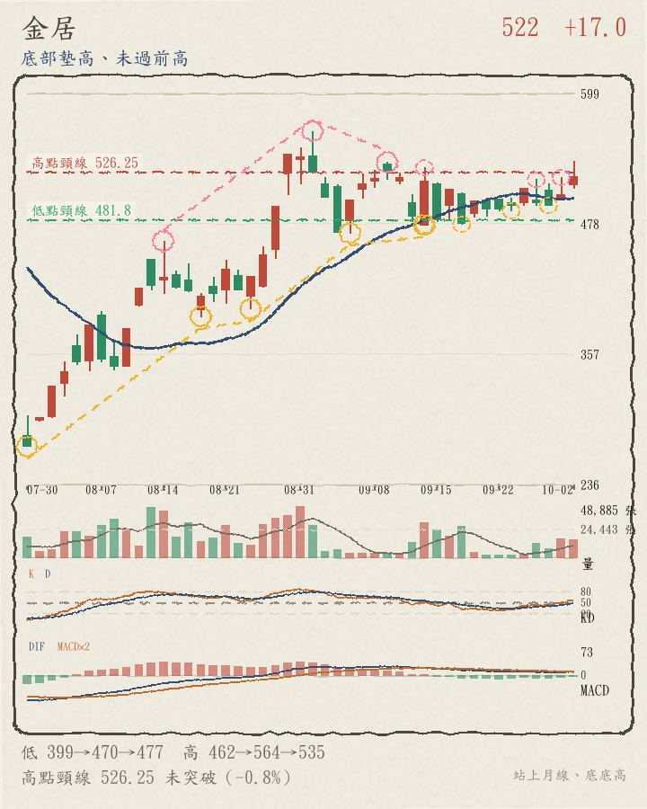
12:30 盤中 522（+3.37%），比加權指數強 3.12 個百分點、站上月線 500.85，離高點頸線 526.25 還差 0.8%，底部還在墊高（但高點沒同步創高）。
- 月線位置：現價 522 在月線 500.85 之上（+4.2%）；5 日線 501.2 也在月線之上（短均在上）；月線向下
- 量能：以已過交易時間推估，今天成交量約是 20 日均量的 1.94 倍（爆量），比 20 日均量大不少；上漲又量增，量價配合
- 關鍵價位：高點頸線 526.25 還沒突破，差 0.8%；前一交易日高點 521（高於 0.2%）；今天盤中高點 536（低於 2.6%）；今天盤中低點 511（高於 2.2%）
- 轉折結構：低點 399、469.5、477 墊高（底底高），但高點 462、564、535 沒有同步創高；還沒確認的轉折低點 09-23 490、09-30 495；還沒確認的轉折高點 09-29 519、10-01 521（圖上虛線小圈）
智邦 2345 上市
1950 +50.0（+2.63%）
區間或轉弱 盤中成交值 80.16 億・全榜第 27 名（上市第 20 名）・相對大盤 +2.38
好條件 4/8：站上月線、突破頸線、相對大盤強、攻擊量（量增＋上漲）
不好條件 1/8：月線下彎
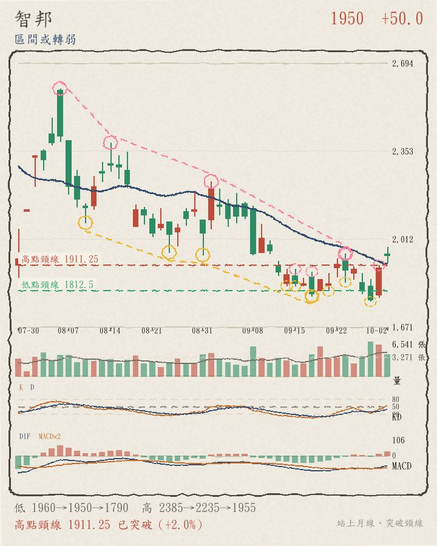
12:30 盤中 1950（+2.63%），比加權指數強 2.38 個百分點、站上月線 1924.25，已突破高點頸線 1911.25，轉折還沒走出明顯方向。
- 月線位置：現價 1950 在月線 1924.25 之上（+1.3%）；5 日線 1854 也在月線之下（短均在下）；月線向下
- 量能：以已過交易時間推估，今天成交量約是 20 日均量的 1.51 倍（爆量），比 20 日均量大不少；上漲又量增，量價配合
- 關鍵價位：高點頸線 1911.25 已站上；前一交易日高點 1910（高於 2.1%）；今天盤中高點 1980（低於 1.5%）；今天盤中低點 1920（高於 1.6%）
- 轉折結構：低點 1960、1950、1790 與高點 2385、2235、1955 都沒有明顯遞增，屬於區間震盪或轉弱；還沒確認的轉折低點 09-23 1845、09-30 1770；還沒確認的轉折高點 09-23 1955、10-01 1910（圖上虛線小圈）
力成 6239 上市
306.5 +14.0（+4.79%）
區間或轉弱 盤中成交值 80.12 億・全榜第 28 名（上市第 21 名）・相對大盤 +4.54
好條件 5/8：站上月線、月線向上、突破頸線、相對大盤強、攻擊量（量增＋上漲）
不好條件 0/8：無
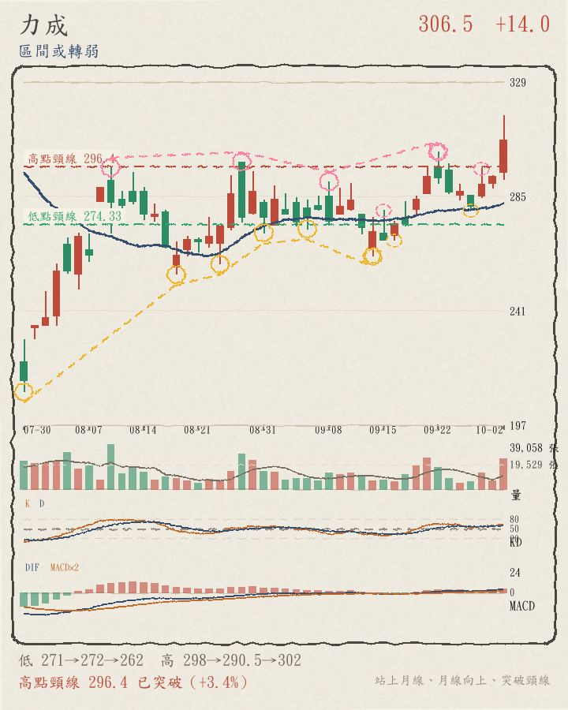
12:30 盤中 306.5（+4.79%），比加權指數強 4.54 個百分點、站上月線 280.8，已突破高點頸線 296.4，轉折還沒走出明顯方向。
- 月線位置：現價 306.5 在月線 280.8 之上（+9.2%）；5 日線 287.3 也在月線之上（短均在上）；月線向上
- 量能：以已過交易時間推估，今天成交量約是 20 日均量的 2.83 倍（爆量），比 20 日均量大不少；上漲又量增，量價配合
- 關鍵價位：高點頸線 296.4 已站上；前一交易日高點 293（高於 4.6%）；今天盤中高點 316（低於 3.0%）；今天盤中低點 291.5（高於 5.1%）
- 轉折結構：低點 271、272.5、262 與高點 298、290.5、302 都沒有明顯遞增，屬於區間震盪或轉弱；還沒確認的轉折低點 09-16 268、09-29 279.5；還沒確認的轉折高點 09-22 302、09-30 295.5（圖上虛線小圈）
奇鋐 3017 上市
3440 -70.0（-1.99%）
區間或轉弱 盤中成交值 79.91 億・全榜第 29 名（上市第 22 名）・相對大盤 -2.24
好條件 2/8：站上月線、月線向上
不好條件 2/8：今日下跌、相對大盤弱
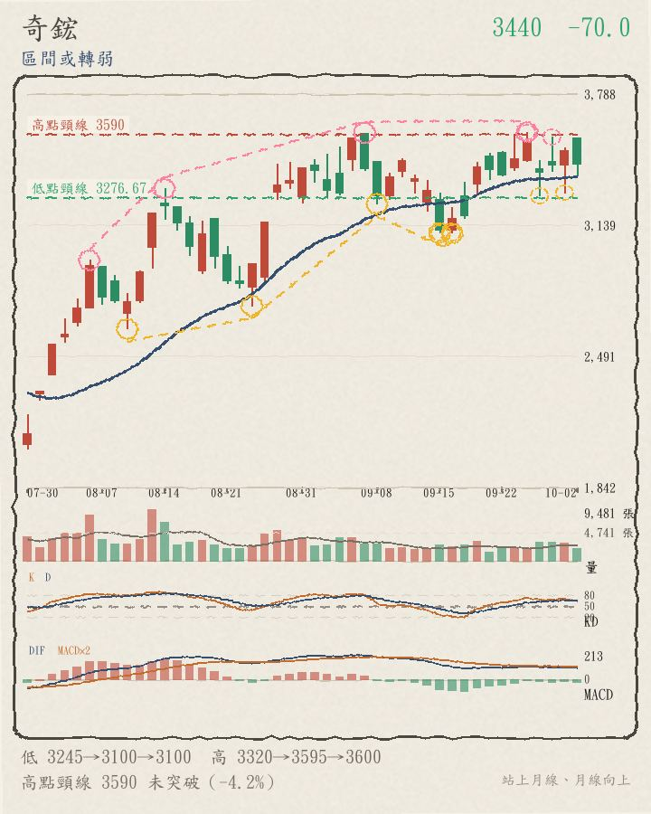
12:30 盤中 3440（-1.99%），比加權指數弱 2.24 個百分點、站上月線 3374.25，離高點頸線 3590 還差 4.2%，轉折還沒走出明顯方向。
- 月線位置：現價 3440 在月線 3374.25 之上（+1.9%）；5 日線 3474 也在月線之上（短均在上）；月線向上
- 量能：以已過交易時間推估，今天成交量約是 20 日均量的 1.05 倍（量平），比 20 日均量大一些
- 關鍵價位：高點頸線 3590 還沒突破，差 4.2%；前一交易日高點 3520（低於 2.3%）；今天盤中高點 3570（低於 3.6%）；今天盤中低點 3385（高於 1.6%）
- 轉折結構：低點 3245、3100、3100 與高點 3320、3595、3600 都沒有明顯遞增，屬於區間震盪或轉弱；還沒確認的轉折低點 09-29 3285、10-01 3300；還沒確認的轉折高點 09-24 3600、09-30 3575（圖上虛線小圈）
台達電 2308 上市
1890 -15.0（-0.79%）
高點墊高、底部不穩 盤中成交值 79.21 億・全榜第 30 名（上市第 23 名）・相對大盤 -1.04
好條件 3/8：站上月線、月線向上、頭頭高
不好條件 3/8：今日下跌、相對大盤弱、貼近今日低點（1% 內）
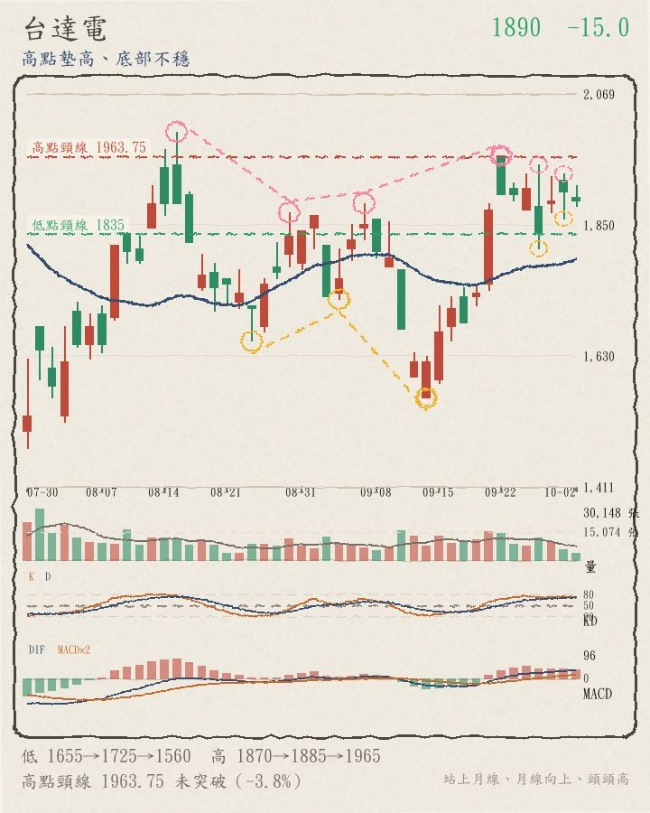
12:30 盤中 1890（-0.79%），比加權指數弱 1.04 個百分點、站上月線 1784.75，離高點頸線 1963.75 還差 3.8%，高點還在墊高（但底部沒同步墊高）。
- 月線位置：現價 1890 在月線 1784.75 之上（+5.9%）；5 日線 1888 也在月線之上（短均在上）；月線向上
- 量能：以已過交易時間推估，今天成交量約是 20 日均量的 0.50 倍（量縮），比 20 日均量少很多
- 關鍵價位：高點頸線 1963.75 還沒突破，差 3.8%；前一交易日高點 1935（低於 2.3%）；今天盤中高點 1915（低於 1.3%）；今天盤中低點 1880（高於 0.5%）
- 轉折結構：高點 1870、1885、1965 墊高（頭頭高），但低點 1655、1725、1560 沒有同步墊高；還沒確認的轉折低點 09-29 1810、10-01 1860；還沒確認的轉折高點 09-29 1950、10-01 1935（圖上虛線小圈）
晶技 3042 上市
228 +9.5（+4.35%）
高點墊高、底部不穩 盤中成交值 78.07 億・全榜第 31 名（上市第 24 名）・相對大盤 +4.10
好條件 6/8：站上月線、月線向上、頭頭高、突破頸線、相對大盤強、攻擊量（量增＋上漲）
不好條件 0/8：無
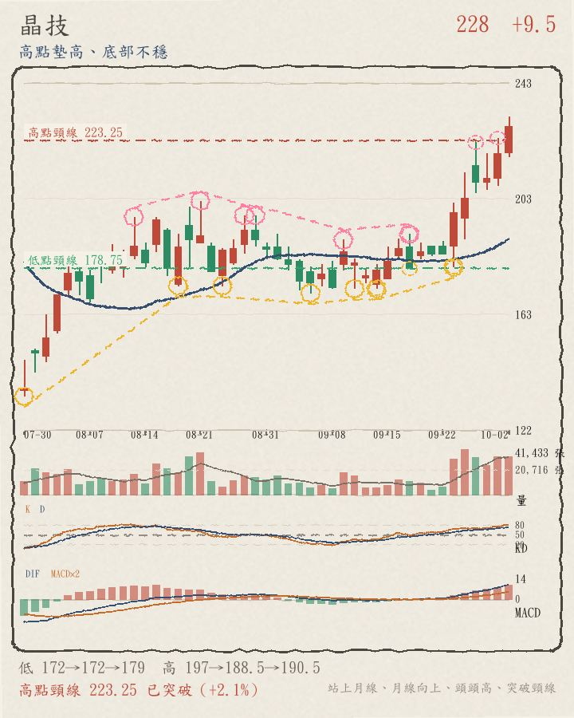
12:30 盤中 228（+4.35%），比加權指數強 4.10 個百分點、站上月線 186.475，已突破高點頸線 223.25，高點還在墊高（但底部沒同步墊高）。
- 月線位置：現價 228 在月線 186.475 之上（+22.3%）；5 日線 207.6 也在月線之上（短均在上）；月線向上
- 量能：以已過交易時間推估，今天成交量約是 20 日均量的 2.96 倍（爆量），比 20 日均量大不少；上漲又量增，量價配合
- 關鍵價位：高點頸線 223.25 已站上；前一交易日高點 224（高於 1.8%）；今天盤中高點 231.5（低於 1.5%）；今天盤中低點 217.5（高於 4.8%）
- 轉折結構：高點 197、188.5、190.5 墊高（頭頭高），但低點 171.5、171.5、179 沒有同步墊高；還沒確認的轉折低點 09-17 178.5、09-23 179；還沒確認的轉折高點 09-29 222.5、10-01 224（圖上虛線小圈）
聯鈞 3450 上市
545 +30.0（+5.83%）
底部墊高、未過前高 盤中成交值 77.68 億・全榜第 32 名（上市第 25 名）・相對大盤 +5.58
好條件 5/8：站上月線、底底高、突破頸線、相對大盤強、攻擊量（量增＋上漲）
不好條件 1/8：月線下彎
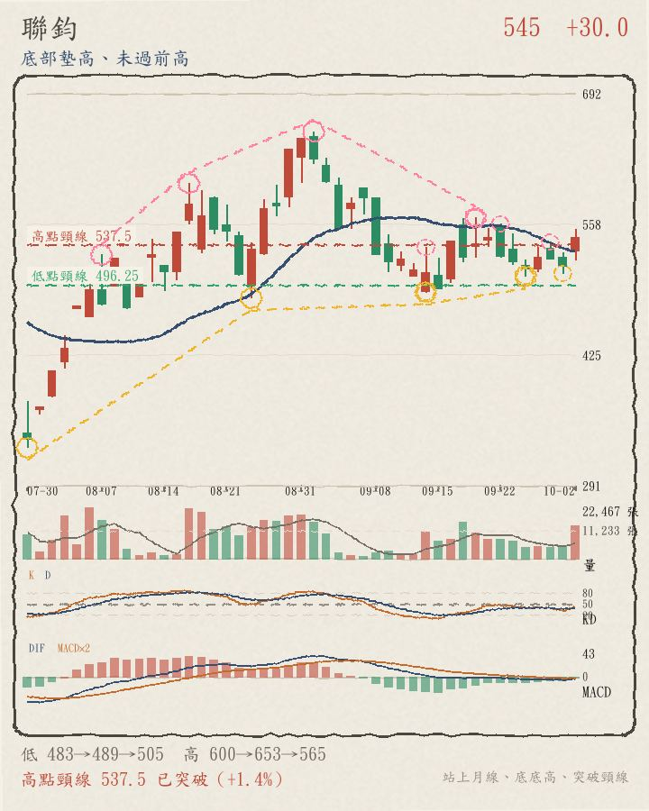
12:30 盤中 545（+5.83%），比加權指數強 5.58 個百分點、站上月線 533.775，已突破高點頸線 537.5，底部還在墊高（但高點沒同步創高）。
- 月線位置：現價 545 在月線 533.775 之上（+2.1%）；5 日線 519.2 也在月線之下（短均在下）；月線向下
- 量能：以已過交易時間推估，今天成交量約是 20 日均量的 2.67 倍（爆量），比 20 日均量大不少；上漲又量增，量價配合
- 關鍵價位：高點頸線 537.5 已站上；前一交易日高點 529（高於 3.0%）；今天盤中高點 553（低於 1.4%）；今天盤中低點 522（高於 4.4%）
- 轉折結構：低點 483、489、505 墊高（底底高），但高點 600、653、565 沒有同步創高；還沒確認的轉折低點 09-24 505、10-01 508；還沒確認的轉折高點 09-22 559、09-30 540（圖上虛線小圈）
新唐 4919 上市
160.5 +8.5（+5.59%）
高點墊高、底部不穩 盤中成交值 76.19 億・全榜第 33 名（上市第 26 名）・相對大盤 +5.34
好條件 6/8：站上月線、月線向上、頭頭高、突破頸線、相對大盤強、攻擊量（量增＋上漲）
不好條件 0/8：無
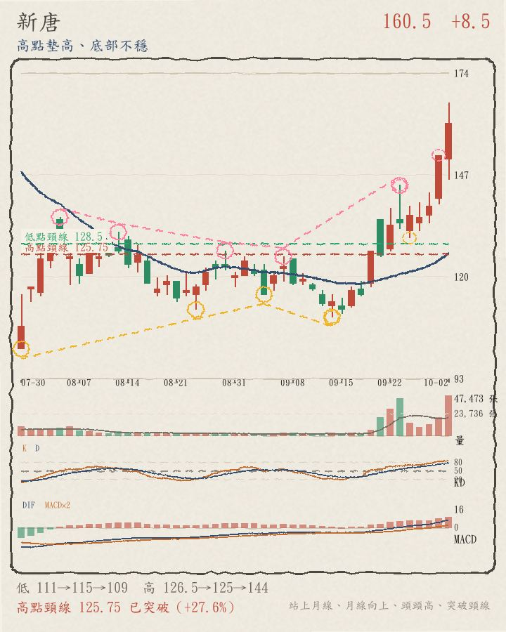
12:30 盤中 160.5（+5.59%），比加權指數強 5.34 個百分點、站上月線 124.025，已突破高點頸線 125.75，高點還在墊高（但底部沒同步墊高）。
- 月線位置：現價 160.5 在月線 124.025 之上（+29.4%）；5 日線 139.2 也在月線之上（短均在上）；月線向上
- 量能：以已過交易時間推估，今天成交量約是 20 日均量的 7.22 倍（爆量），比 20 日均量大不少；上漲又量增，量價配合
- 關鍵價位：高點頸線 125.75 已站上；前一交易日高點 152（高於 5.6%）；今天盤中高點 166（低於 3.3%）；今天盤中低點 145.5（高於 10.3%）
- 轉折結構：高點 126.5、125、144 墊高（頭頭高），但低點 111、115、109 沒有同步墊高；還沒確認的轉折低點 09-14 109、09-24 130；還沒確認的轉折高點 09-23 144、10-01 152（圖上虛線小圈）
高力 8996 上市
1505 -60.0（-3.83%）
上升趨勢（底底高＋頭頭高） 盤中成交值 72.07 億・全榜第 34 名（上市第 27 名）・相對大盤 -4.08
好條件 4/8：站上月線、月線向上、底底高、頭頭高
不好條件 3/8：今日下跌、相對大盤弱、量增下跌（出貨）
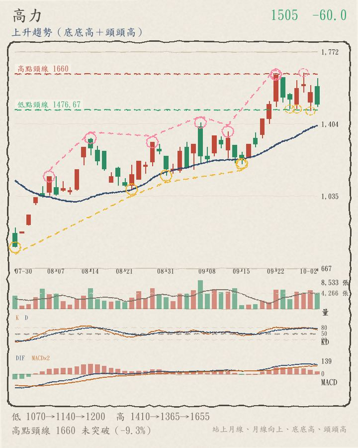
12:30 盤中 1505（-3.83%），比加權指數弱 4.08 個百分點、站上月線 1383，離高點頸線 1660 還差 9.3%，轉折結構仍是底底高＋頭頭高。
- 月線位置：現價 1505 在月線 1383 之上（+8.8%）；5 日線 1565 也在月線之上（短均在上）；月線向上
- 量能：以已過交易時間推估，今天成交量約是 20 日均量的 1.49 倍（量增），比 20 日均量大不少；下跌卻量增，量價背離
- 關鍵價位：高點頸線 1660 還沒突破，差 9.3%；前一交易日高點 1600（低於 5.9%）；今天盤中高點 1635（低於 8.0%）；今天盤中低點 1490（高於 1.0%）
- 轉折結構：低點 1070、1140、1200 一路墊高、高點 1410、1365、1655 也一路墊高，是底底高＋頭頭高；還沒確認的轉折低點 09-29 1480、10-01 1470；還沒確認的轉折高點 09-22 1655、09-30 1665（圖上虛線小圈）
信昌電 6173 上櫃
306.5 +4.0（+1.32%）
上升趨勢（底底高＋頭頭高） 盤中成交值 64.69 億・全榜第 35 名（上櫃第 8 名）・相對大盤 +1.07
好條件 6/8：站上月線、月線向上、底底高、頭頭高、相對大盤強、攻擊量（量增＋上漲）
不好條件 0/8：無
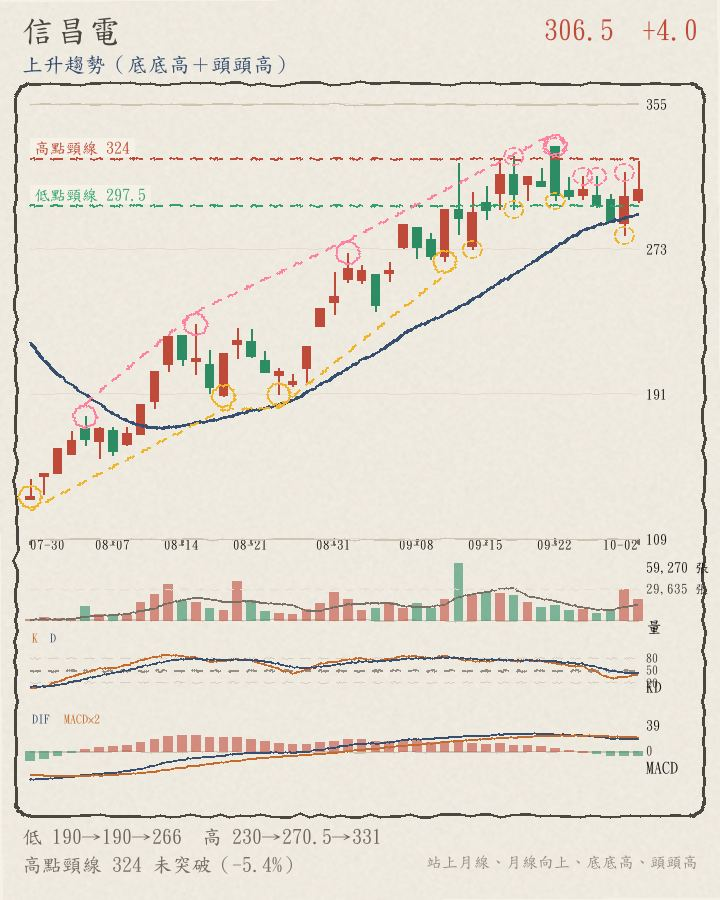
12:30 盤中 306.5（+1.32%），比加權指數強 1.07 個百分點、站上月線 290.225，離高點頸線 324 還差 5.4%，轉折結構仍是底底高＋頭頭高。
- 月線位置：現價 306.5 在月線 290.225 之上（+5.6%）；5 日線 299.5 也在月線之上（短均在上）；月線向上
- 量能：以已過交易時間推估，今天成交量約是 20 日均量的 1.43 倍（量增），比 20 日均量大不少；上漲又量增，量價配合
- 關鍵價位：高點頸線 324 還沒突破，差 5.4%；前一交易日高點 316（低於 3.0%）；今天盤中高點 322.5（低於 5.0%）；今天盤中低點 299（高於 2.5%）
- 轉折結構：低點 189.5、190.5、265.5 一路墊高、高點 230、270.5、331 也一路墊高，是底底高＋頭頭高；還沒確認的轉折低點 09-22 300、10-01 280.5；還沒確認的轉折高點 09-29 314、10-01 316（圖上虛線小圈）
金像電 2368 上市
1100 +5.0（+0.46%）
高點墊高、底部不穩 盤中成交值 60.2 億・全榜第 36 名（上市第 28 名）・相對大盤 +0.21
好條件 3/8：站上月線、頭頭高、相對大盤強
不好條件 1/8：月線下彎
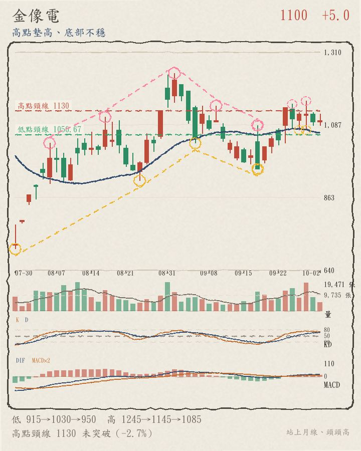
12:30 盤中 1100（+0.46%），比加權指數強 0.21 個百分點、站上月線 1065.45，離高點頸線 1130 還差 2.7%，高點還在墊高（但底部沒同步墊高）。
- 月線位置：現價 1100 在月線 1065.45 之上（+3.2%）；5 日線 1116 也在月線之上（短均在上）；月線向下
- 量能：以已過交易時間推估，今天成交量約是 20 日均量的 0.81 倍（量平），比 20 日均量少很多；上漲但量縮，量價背離
- 關鍵價位：高點頸線 1130 還沒突破，差 2.7%；前一交易日高點 1125（低於 2.2%）；今天盤中高點 1120（低於 1.8%）；今天盤中低點 1085（高於 1.4%）
- 轉折結構：高點 1245、1145、1085 墊高（頭頭高），但低點 915、1030、950 沒有同步墊高；還沒確認的轉折低點 09-29 1070、09-30 1070；還沒確認的轉折高點 09-24 1150、09-30 1160（圖上虛線小圈）
大立光 3008 上市
6200 -5.0（-0.08%）
區間或轉弱 盤中成交值 59.71 億・全榜第 37 名（上市第 29 名）・相對大盤 -0.33
好條件 1/8：守住今日高檔（距今日高點 1% 內）
不好條件 4/8：今日下跌、相對大盤弱、在月線之下、月線下彎
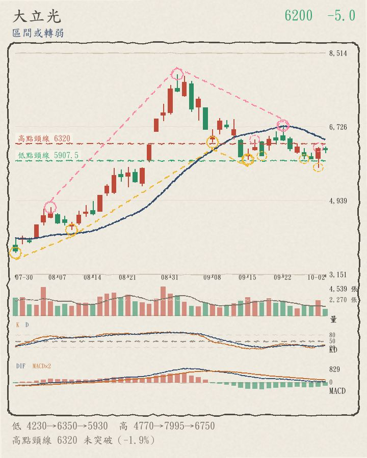
12:30 盤中 6200（-0.08%），比加權指數弱 0.33 個百分點、跌破月線 6495.25，離高點頸線 6320 還差 1.9%，轉折還沒走出明顯方向。
- 月線位置：現價 6200 在月線 6495.25 之下（-4.5%）；5 日線 6121 也在月線之下（短均在下）；月線向下
- 量能：以已過交易時間推估，今天成交量約是 20 日均量的 0.64 倍（量縮），比 20 日均量少很多
- 關鍵價位：高點頸線 6320 還沒突破，差 1.9%；前一交易日高點 6225（低於 0.4%）；今天盤中高點 6240（低於 0.6%）；今天盤中低點 6090（高於 1.8%）
- 轉折結構：低點 4230、6350、5930 與高點 4770、7995、6750 都沒有明顯遞增，屬於區間震盪或轉弱；還沒確認的轉折低點 09-29 5940、10-01 5740；還沒確認的轉折高點 09-22 6750、10-01 6225（圖上虛線小圈）
量縮
↑ 回上方清單
騰輝電子-KY 6672 上市
426 +20.5（+5.06%）
上升趨勢（底底高＋頭頭高） 盤中成交值 57.63 億・全榜第 38 名（上市第 30 名）・相對大盤 +4.81
好條件 7/8：站上月線、月線向上、底底高、頭頭高、突破頸線、相對大盤強、攻擊量（量增＋上漲）
不好條件 0/8：無
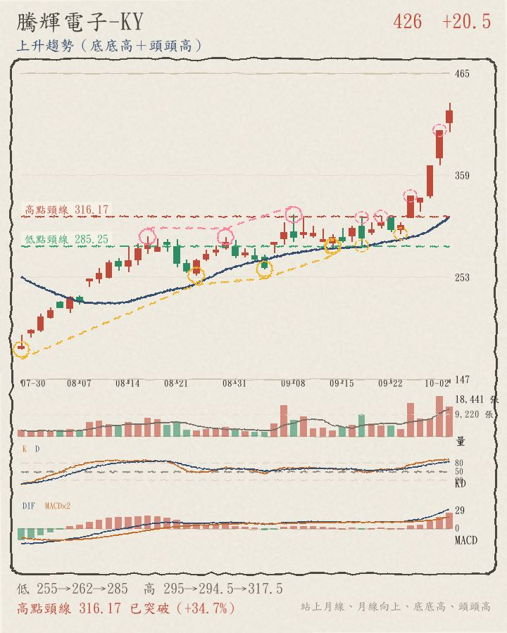
12:30 盤中 426（+5.06%），比加權指數強 4.81 個百分點、站上月線 307.975，已突破高點頸線 316.17，轉折結構仍是底底高＋頭頭高。
- 月線位置：現價 426 在月線 307.975 之上（+38.3%）；5 日線 350.9 也在月線之上（短均在上）；月線向上
- 量能：以已過交易時間推估，今天成交量約是 20 日均量的 2.89 倍（爆量），比 20 日均量大不少；上漲又量增，量價配合
- 關鍵價位：高點頸線 316.17 已站上；前一交易日高點 405.5（高於 5.1%）；今天盤中高點 434（低於 1.8%）；今天盤中低點 404（高於 5.4%）
- 轉折結構：低點 255、261.5、285 一路墊高、高點 295、294.5、317.5 也一路墊高，是底底高＋頭頭高；還沒確認的轉折低點 09-17 285.5、09-23 298；還沒確認的轉折高點 09-24 337.5、10-01 405.5（圖上虛線小圈）
貿聯-KY 3665 上市
2530 -25.0（-0.98%）
高點墊高、底部不穩 盤中成交值 55.56 億・全榜第 39 名（上市第 31 名）・相對大盤 -1.23
好條件 4/8：站上月線、月線向上、頭頭高、突破頸線
不好條件 3/8：今日下跌、相對大盤弱、貼近今日低點（1% 內）
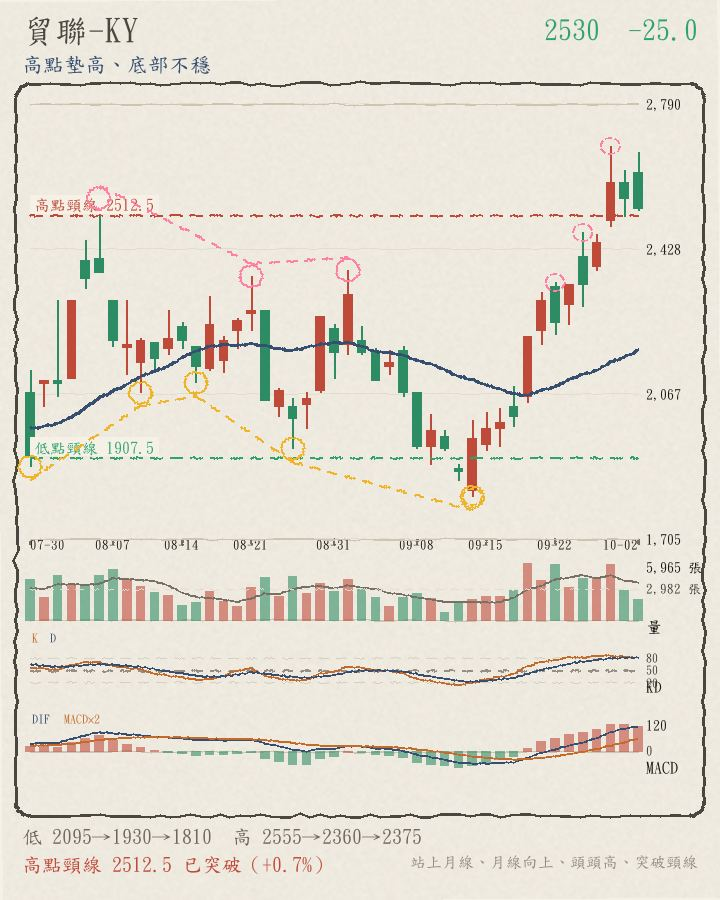
12:30 盤中 2530（-0.98%），比加權指數弱 1.23 個百分點、站上月線 2158.5，已突破高點頸線 2512.5，高點還在墊高（但底部沒同步墊高）。
- 月線位置：現價 2530 在月線 2158.5 之上（+17.2%）；5 日線 2455 也在月線之上（短均在上）；月線向上
- 量能：以已過交易時間推估，今天成交量約是 20 日均量的 0.87 倍（量平），比 20 日均量少一些
- 關鍵價位：高點頸線 2512.5 已站上；前一交易日高點 2625（低於 3.6%）；今天盤中高點 2670（低於 5.2%）；今天盤中低點 2525（高於 0.2%）
- 轉折結構：高點 2555、2360、2375 墊高（頭頭高），但低點 2095、1930、1810 沒有同步墊高；還沒確認的轉折低點 09-14 1810；還沒確認的轉折高點 09-24 2470、09-30 2685（圖上虛線小圈）
大量 3167 上市
977 +2.0（+0.21%）
上升趨勢（底底高＋頭頭高） 盤中成交值 53.45 億・全榜第 40 名（上市第 32 名）・相對大盤 -0.04
好條件 6/8：站上月線、月線向上、底底高、頭頭高、突破頸線、攻擊量（量增＋上漲）
不好條件 1/8：相對大盤弱
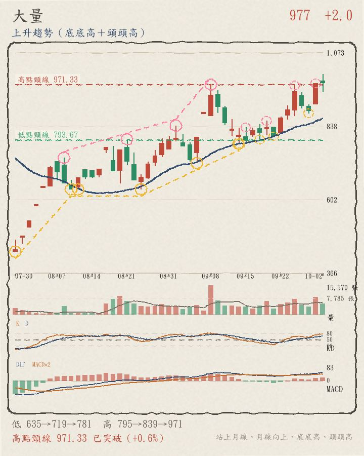
12:30 盤中 977（+0.21%），比加權指數弱 0.04 個百分點、站上月線 852.75，已突破高點頸線 971.33，轉折結構仍是底底高＋頭頭高。
- 月線位置：現價 977 在月線 852.75 之上（+14.6%）；5 日線 920.8 也在月線之上（短均在上）；月線向上
- 量能：以已過交易時間推估，今天成交量約是 20 日均量的 1.37 倍（量增），比 20 日均量大不少；上漲又量增，量價配合
- 關鍵價位：高點頸線 971.33 已站上；前一交易日高點 975（高於 0.2%）；今天盤中高點 1005（低於 2.8%）；今天盤中低點 948（高於 3.1%）
- 轉折結構：低點 635、719、781 一路墊高、高點 795、839、971 也一路墊高，是底底高＋頭頭高；還沒確認的轉折低點 09-21 805、09-30 879；還沒確認的轉折高點 09-24 968、10-01 975（圖上虛線小圈）
日月光投控 3711 上市
710 +0.0（+0.00%）
上升趨勢（底底高＋頭頭高） 盤中成交值 53.44 億・全榜第 41 名（上市第 33 名）・相對大盤 -0.25
好條件 4/8：站上月線、月線向上、底底高、頭頭高
不好條件 2/8：相對大盤弱、貼近今日低點（1% 內）
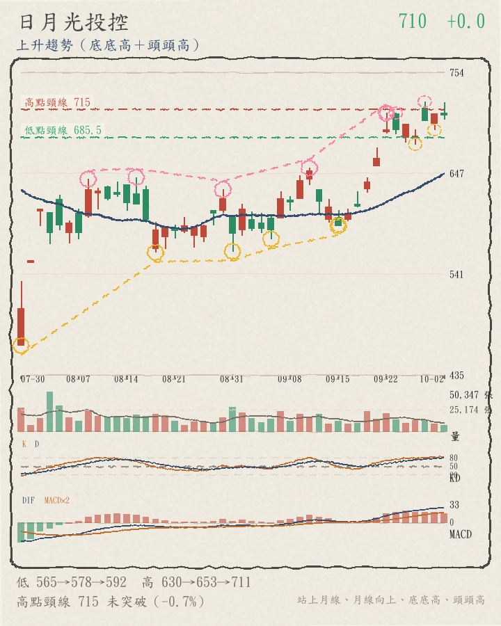
12:30 盤中 710（+0.00%），比加權指數弱 0.25 個百分點、站上月線 641.1，離高點頸線 715 還差 0.7%，轉折結構仍是底底高＋頭頭高。
- 月線位置：現價 710 在月線 641.1 之上（+10.8%）；5 日線 698.4 也在月線之上（短均在上）；月線向上
- 量能：以已過交易時間推估，今天成交量約是 20 日均量的 0.60 倍（量縮），比 20 日均量少很多
- 關鍵價位：高點頸線 715 還沒突破，差 0.7%；前一交易日高點 710（高於 0.0%）；今天盤中高點 722（低於 1.7%）；今天盤中低點 704（高於 0.9%）
- 轉折結構：低點 565、578、592 一路墊高、高點 630、653、711 也一路墊高，是底底高＋頭頭高；還沒確認的轉折低點 09-29 678、10-01 693；還沒確認的轉折高點 09-23 711、09-30 723（圖上虛線小圈）
光頡 3624 上櫃
149 -2.0（-1.32%）
上升趨勢（底底高＋頭頭高） 盤中成交值 52.28 億・全榜第 42 名（上櫃第 9 名）・相對大盤 -1.57
好條件 5/8：站上月線、月線向上、底底高、頭頭高、突破頸線
不好條件 3/8：今日下跌、相對大盤弱、量增下跌（出貨）
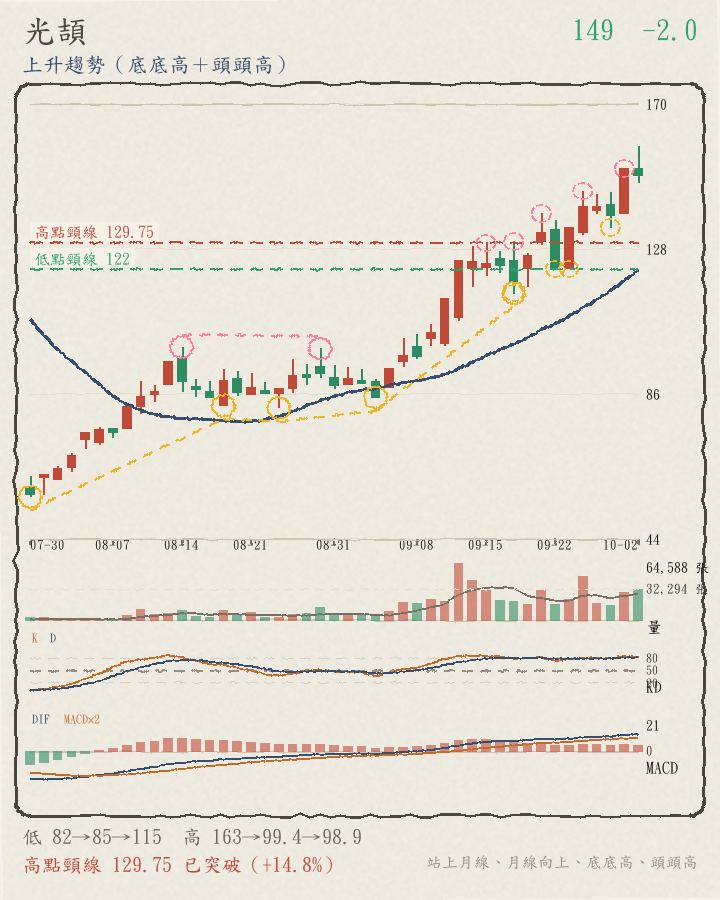
12:30 盤中 149（-1.32%），比加權指數弱 1.57 個百分點、站上月線 118.675，已突破高點頸線 129.75，轉折結構仍是底底高＋頭頭高。
- 月線位置：現價 149 在月線 118.675 之上（+25.6%）；5 日線 140.5 也在月線之上（短均在上）；月線向上
- 量能：以已過交易時間推估，今天成交量約是 20 日均量的 1.92 倍（爆量），比 20 日均量大不少；下跌卻量增，量價背離
- 關鍵價位：高點頸線 129.75 已站上；前一交易日高點 151（低於 1.3%）；今天盤中高點 157.5（低於 5.4%）；今天盤中低點 147（高於 1.4%）
- 轉折結構：低點 81.8、84.8、115 一路墊高、高點 163、99.4、98.9 也一路墊高，是底底高＋頭頭高；還沒確認的轉折低點 09-23 122、09-30 134；還沒確認的轉折高點 09-24 144.5、10-01 151（圖上虛線小圈）
健策 3653 上市
6860 -15.0（-0.22%）
高點墊高、底部不穩 盤中成交值 51.93 億・全榜第 43 名（上市第 34 名）・相對大盤 -0.47
好條件 4/8：站上月線、月線向上、頭頭高、突破頸線
不好條件 2/8：今日下跌、相對大盤弱
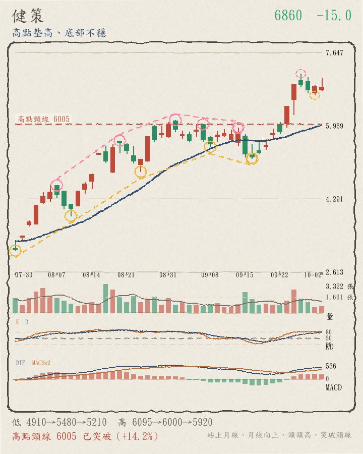
12:30 盤中 6860（-0.22%），比加權指數弱 0.47 個百分點、站上月線 5927.5，已突破高點頸線 6005，高點還在墊高（但底部沒同步墊高）。
- 月線位置：現價 6860 在月線 5927.5 之上（+15.7%）；5 日線 6780 也在月線之上（短均在上）；月線向上
- 量能：以已過交易時間推估，今天成交量約是 20 日均量的 0.83 倍（量平），比 20 日均量少很多
- 關鍵價位：高點頸線 6005 已站上；前一交易日高點 6895（低於 0.5%）；今天盤中高點 7065（低於 2.9%）；今天盤中低點 6760（高於 1.5%）
- 轉折結構：高點 6095、6000、5920 墊高（頭頭高），但低點 4910、5480、5210 沒有同步墊高；還沒確認的轉折低點 09-16 5210、10-01 6665；還沒確認的轉折高點 09-14 5920、09-29 7160（圖上虛線小圈）
致茂 2360 上市
2185 +105.0（+5.05%）
上升趨勢（底底高＋頭頭高） 盤中成交值 51.74 億・全榜第 44 名（上市第 35 名）・相對大盤 +4.80
好條件 5/8：月線向上、底底高、頭頭高、相對大盤強、攻擊量（量增＋上漲）
不好條件 1/8：在月線之下
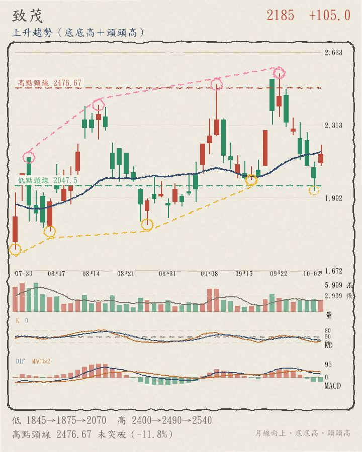
12:30 盤中 2185（+5.05%），比加權指數強 4.80 個百分點、跌破月線 2185.5，離高點頸線 2476.67 還差 11.8%，轉折結構仍是底底高＋頭頭高。
- 月線位置：現價 2185 在月線 2185.5 之下（-0.0%）；5 日線 2204 也在月線之上（短均在上）；月線向上
- 量能：以已過交易時間推估，今天成交量約是 20 日均量的 1.40 倍（量增），比 20 日均量大不少；上漲又量增，量價配合
- 關鍵價位：高點頸線 2476.67 還沒突破，差 11.8%；前一交易日高點 2150（高於 1.6%）；今天盤中高點 2225（低於 1.8%）；今天盤中低點 2135（高於 2.3%）
- 轉折結構：低點 1845、1875、2070 一路墊高、高點 2400、2490、2540 也一路墊高，是底底高＋頭頭高；還沒確認的轉折低點 09-16 2070、10-01 2025；還沒確認的轉折高點 09-22 2540（圖上虛線小圈）
聯一光 3441 上櫃
210 +7.5（+3.70%）
上升趨勢（底底高＋頭頭高） 盤中成交值 51.14 億・全榜第 45 名（上櫃第 10 名）・相對大盤 +3.45
好條件 7/8：站上月線、月線向上、底底高、頭頭高、突破頸線、相對大盤強、攻擊量（量增＋上漲）
不好條件 0/8：無
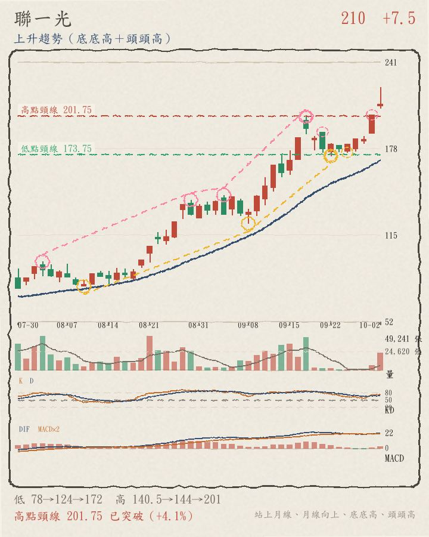
12:30 盤中 210（+3.70%），比加權指數強 3.45 個百分點、站上月線 165.95，已突破高點頸線 201.75，轉折結構仍是底底高＋頭頭高。
- 月線位置：現價 210 在月線 165.95 之上（+26.5%）；5 日線 186.1 也在月線之上（短均在上）；月線向上
- 量能：以已過交易時間推估，今天成交量約是 20 日均量的 2.37 倍（爆量），比 20 日均量大不少；上漲又量增，量價配合
- 關鍵價位：高點頸線 201.75 已站上；前一交易日高點 202.5（高於 3.7%）；今天盤中高點 222.5（低於 5.6%）；今天盤中低點 207（高於 1.4%）
- 轉折結構：低點 77.9、123.5、172.5 一路墊高、高點 140.5、144、201 也一路墊高，是底底高＋頭頭高；還沒確認的轉折低點 09-22 172.5、09-24 175；還沒確認的轉折高點 09-21 190、10-01 202.5（圖上虛線小圈）
頎邦 6147 上櫃
223 -2.5（-1.11%）
區間或轉弱 盤中成交值 50.73 億・全榜第 46 名（上櫃第 11 名）・相對大盤 -1.36
好條件 2/8：站上月線、月線向上
不好條件 3/8：今日下跌、相對大盤弱、貼近今日低點（1% 內）
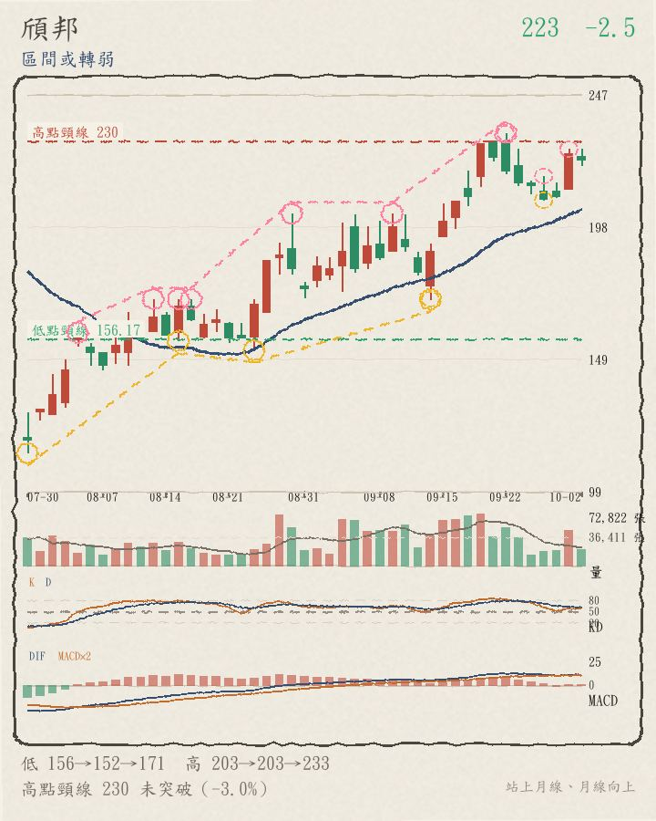
12:30 盤中 223（-1.11%），比加權指數弱 1.36 個百分點、站上月線 202.525，離高點頸線 230 還差 3.0%，轉折還沒走出明顯方向。
- 月線位置：現價 223 在月線 202.525 之上（+10.1%）；5 日線 214.3 也在月線之上（短均在上）；月線向上
- 量能：以已過交易時間推估，今天成交量約是 20 日均量的 0.65 倍（量縮），比 20 日均量少很多
- 關鍵價位：高點頸線 230 還沒突破，差 3.0%；前一交易日高點 227（低於 1.8%）；今天盤中高點 227（低於 1.8%）；今天盤中低點 221（高於 0.9%）
- 轉折結構：低點 155.5、152、171 與高點 203、203、233 都沒有明顯遞增，屬於區間震盪或轉弱；還沒確認的轉折低點 09-14 171、09-29 208；還沒確認的轉折高點 09-29 217、10-01 227（圖上虛線小圈）
愛普* 6531 上市
1000 +67.0（+7.18%）
區間或轉弱 盤中成交值 50.66 億・全榜第 47 名（上市第 36 名）・相對大盤 +6.93
好條件 4/8：站上月線、月線向上、相對大盤強、攻擊量（量增＋上漲）
不好條件 0/8：無
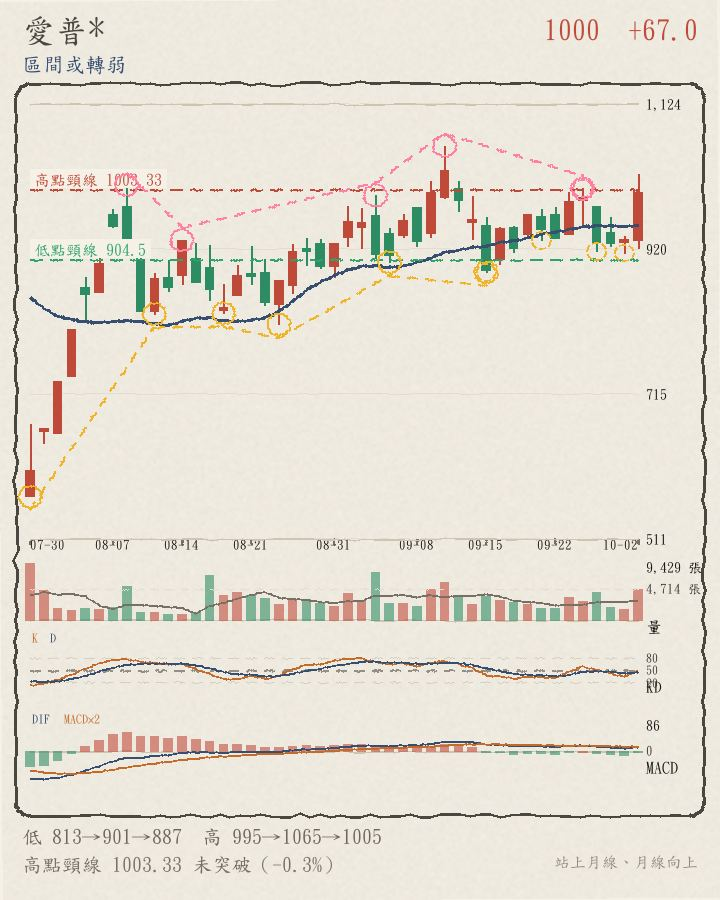
12:30 盤中 1000（+7.18%），比加權指數強 6.93 個百分點、站上月線 951.4，離高點頸線 1003.33 還差 0.3%，轉折還沒走出明顯方向。
- 月線位置：現價 1000 在月線 951.4 之上（+5.1%）；5 日線 953.8 也在月線之上（短均在上）；月線向上
- 量能：以已過交易時間推估，今天成交量約是 20 日均量的 1.83 倍（爆量），比 20 日均量大不少；上漲又量增，量價配合
- 關鍵價位：高點頸線 1003.33 還沒突破，差 0.3%；前一交易日高點 937（高於 6.7%）；今天盤中高點 1025（低於 2.4%）；今天盤中低點 920（高於 8.7%）
- 轉折結構：低點 813、901、887 與高點 995、1065、1005 都沒有明顯遞增，屬於區間震盪或轉弱；還沒確認的轉折低點 09-29 916、10-01 914；還沒確認的轉折高點 09-24 1005（圖上虛線小圈）
緯創 3231 上市
186.5 -4.0（-2.10%）
高點墊高、底部不穩 盤中成交值 50.33 億・全榜第 48 名（上市第 37 名）・相對大盤 -2.35
好條件 3/8：站上月線、月線向上、頭頭高
不好條件 3/8：今日下跌、相對大盤弱、貼近今日低點（1% 內）
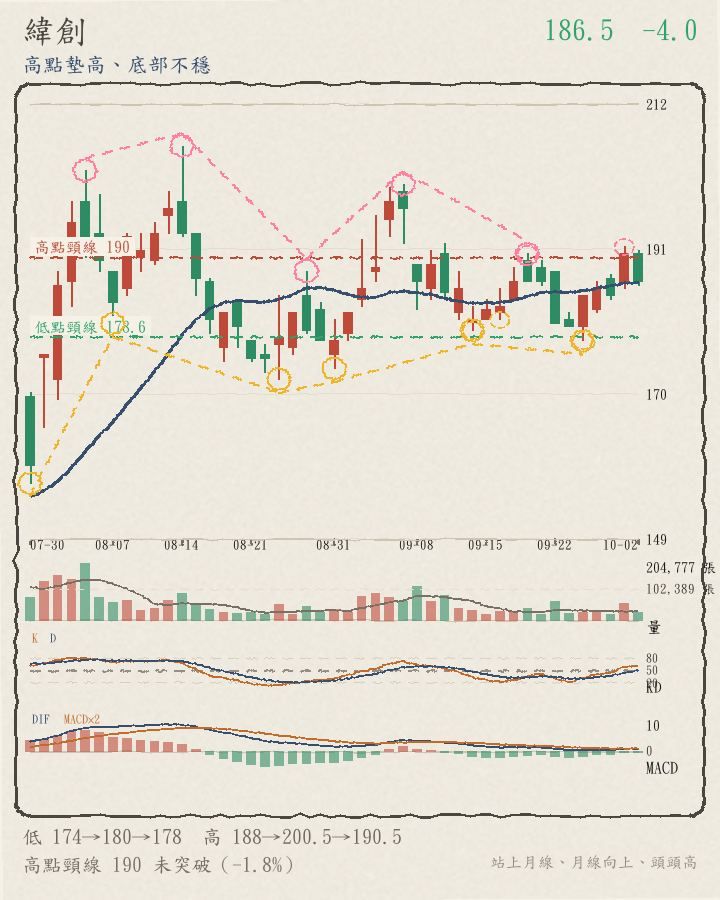
12:30 盤中 186.5（-2.10%），比加權指數弱 2.35 個百分點、站上月線 186.325，離高點頸線 190 還差 1.8%，高點還在墊高（但底部沒同步墊高）。
- 月線位置：現價 186.5 在月線 186.325 之上（+0.1%）；5 日線 185 也在月線之下（短均在下）；月線向上
- 量能：以已過交易時間推估，今天成交量約是 20 日均量的 0.68 倍（量縮），比 20 日均量少很多
- 關鍵價位：高點頸線 190 還沒突破，差 1.8%；前一交易日高點 191.5（低於 2.6%）；今天盤中高點 191（低於 2.4%）；今天盤中低點 186（高於 0.3%）
- 轉折結構：高點 188、200.5、190.5 墊高（頭頭高），但低點 174、179.5、178 沒有同步墊高；還沒確認的轉折低點 09-16 181、09-24 178；還沒確認的轉折高點 09-18 190.5、10-01 191.5（圖上虛線小圈）
鴻海 2317 上市
251 -3.0（-1.18%）
區間或轉弱 盤中成交值 49.97 億・全榜第 49 名（上市第 38 名）・相對大盤 -1.43
好條件 2/8：月線向上、守住今日高檔（距今日高點 1% 內）
不好條件 4/8：今日下跌、相對大盤弱、在月線之下、貼近今日低點（1% 內）
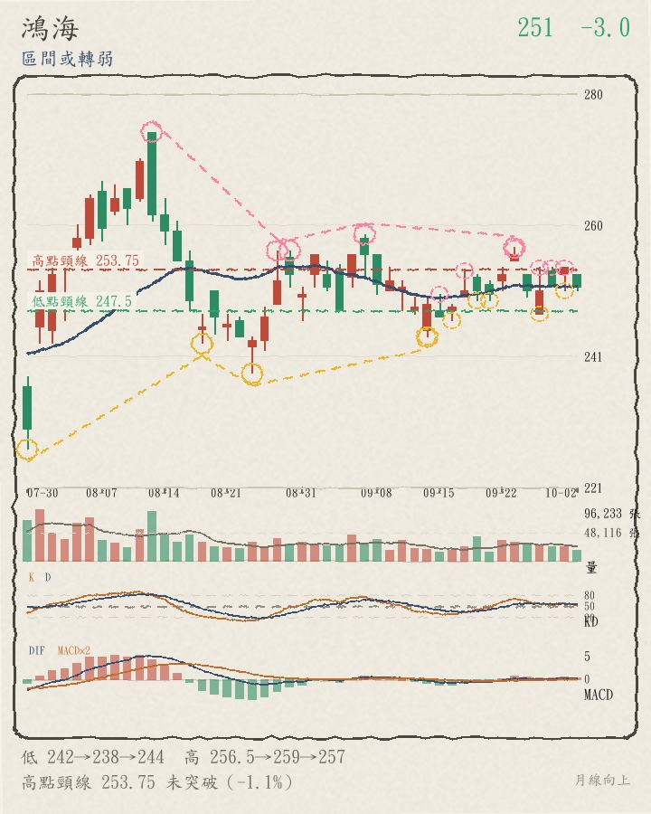
12:30 盤中 251（-1.18%），比加權指數弱 1.43 個百分點、跌破月線 251.125，離高點頸線 253.75 還差 1.1%，轉折還沒走出明顯方向。
- 月線位置：現價 251 在月線 251.125 之下（-0.1%）；5 日線 252.5 也在月線之上（短均在上）；月線向上
- 量能：以已過交易時間推估，今天成交量約是 20 日均量的 0.86 倍（量平），比 20 日均量少一些
- 關鍵價位：高點頸線 253.75 還沒突破，差 1.1%；前一交易日高點 254（低於 1.2%）；今天盤中高點 253（低於 0.8%）；今天盤中低點 250.5（高於 0.2%）
- 轉折結構：低點 242.5、238、243.5 與高點 256.5、259、257 都沒有明顯遞增，屬於區間震盪或轉弱；還沒確認的轉折低點 09-29 247、10-01 250.5；還沒確認的轉折高點 09-30 254、10-01 254（圖上虛線小圈）
川湖 2059 上市
12180 +345.0（+2.92%）
區間或轉弱 盤中成交值 44.21 億・全榜第 50 名（上市第 39 名）・相對大盤 +2.67
好條件 3/8：相對大盤強、攻擊量（量增＋上漲）、守住今日高檔（距今日高點 1% 內）
不好條件 2/8：在月線之下、月線下彎
12:30 盤中 12180（+2.92%），比加權指數強 2.67 個百分點、跌破月線 12571.8，離高點頸線 12757.5 還差 4.5%，轉折還沒走出明顯方向。
- 月線位置：現價 12180 在月線 12571.8 之下（-3.1%）；5 日線 12149 也在月線之下（短均在下）；月線向下
- 量能：以已過交易時間推估，今天成交量約是 20 日均量的 1.14 倍（量增），比 20 日均量大一些；上漲又量增，量價配合
- 關鍵價位：高點頸線 12757.5 還沒突破，差 4.5%；前一交易日高點 12270（低於 0.7%）；今天盤中高點 12295（低於 0.9%）；今天盤中低點 11700（高於 4.1%）
- 轉折結構：低點 6840、13310、11665 與高點 14815、14200、13305 都沒有明顯遞增，屬於區間震盪或轉弱；還沒確認的轉折低點 09-29 11900、10-01 11760；還沒確認的轉折高點 09-22 13305、09-30 12785（圖上虛線小圈）
量增
↑ 回上方清單
中華化 1727 上市
123 +11.0（+9.82%）
高點墊高、底部不穩 盤中成交值 43.39 億・全榜第 51 名（上市第 40 名）・相對大盤 +9.57
好條件 6/8：站上月線、月線向上、頭頭高、突破頸線、相對大盤強、攻擊量（量增＋上漲）
不好條件 0/8：無
12:30 盤中 123（+9.82%），比加權指數強 9.57 個百分點、站上月線 99.81，已突破高點頸線 108.33，高點還在墊高（但底部沒同步墊高）。
- 月線位置：現價 123 在月線 99.81 之上（+23.2%）；5 日線 114.3 也在月線之上（短均在上）；月線向上
- 量能：以已過交易時間推估，今天成交量約是 20 日均量的 4.21 倍（爆量），比 20 日均量大不少；上漲又量增，量價配合
- 關鍵價位：高點頸線 108.33 已站上；前一交易日高點 116（高於 6.0%）；今天盤中高點 123（高於 0.0%）；今天盤中低點 111（高於 10.8%）
- 轉折結構：高點 95.8、106、125 墊高（頭頭高），但低點 74.3、88.2、86.2 沒有同步墊高；還沒確認的轉折低點 09-29 104、10-01 105.5；還沒確認的轉折高點 09-21 109.5、09-24 125（圖上虛線小圈）
尖點 8021 上市
553 +50.0（+9.94%）
高點墊高、底部不穩 盤中成交值 43.32 億・全榜第 52 名（上市第 41 名）・相對大盤 +9.69
好條件 6/8：站上月線、月線向上、頭頭高、突破頸線、相對大盤強、攻擊量（量增＋上漲）
不好條件 0/8：無
12:30 盤中 553（+9.94%），比加權指數強 9.69 個百分點、站上月線 454.875，已突破高點頸線 481，高點還在墊高（但底部沒同步墊高）。
- 月線位置：現價 553 在月線 454.875 之上（+21.6%）；5 日線 485.4 也在月線之上（短均在上）；月線向上
- 量能：以已過交易時間推估，今天成交量約是 20 日均量的 1.68 倍（爆量），比 20 日均量大不少；上漲又量增，量價配合
- 關鍵價位：高點頸線 481 已站上；前一交易日高點 503（高於 9.9%）；今天盤中高點 553（高於 0.0%）；今天盤中低點 501（高於 10.4%）
- 轉折結構：高點 462、481、481 墊高（頭頭高），但低點 373.5、413、410.5 沒有同步墊高；還沒確認的轉折低點 09-18 444、09-29 470；還沒確認的轉折高點 09-21 481、10-01 503（圖上虛線小圈）
波若威 3163 上櫃
716 +65.0（+9.98%）
區間或轉弱 盤中成交值 43.14 億・全榜第 53 名（上櫃第 12 名）・相對大盤 +9.73
好條件 4/8：站上月線、突破頸線、相對大盤強、攻擊量（量增＋上漲）
不好條件 1/8：月線下彎
12:30 盤中 716（+9.98%），比加權指數強 9.73 個百分點、站上月線 685.05，已突破高點頸線 682.33，轉折還沒走出明顯方向。
- 月線位置：現價 716 在月線 685.05 之上（+4.5%）；5 日線 651.2 也在月線之下（短均在下）；月線向下
- 量能：以已過交易時間推估，今天成交量約是 20 日均量的 4.97 倍（爆量），比 20 日均量大不少；上漲又量增，量價配合
- 關鍵價位：高點頸線 682.33 已站上；前一交易日高點 676（高於 5.9%）；今天盤中高點 716（高於 0.0%）；今天盤中低點 667（高於 7.3%）
- 轉折結構：低點 690、720、631 與高點 814、790、689 都沒有明顯遞增，屬於區間震盪或轉弱；還沒確認的轉折低點 09-15 631、09-29 639；還沒確認的轉折高點 09-21 689、10-01 676（圖上虛線小圈）
環宇-KY 4991 上櫃
534 +48.5（+9.99%）
區間或轉弱 盤中成交值 42.85 億・全榜第 54 名（上櫃第 13 名）・相對大盤 +9.74
好條件 4/8：站上月線、突破頸線、相對大盤強、攻擊量（量增＋上漲）
不好條件 1/8：月線下彎
12:30 盤中 534（+9.99%），比加權指數強 9.74 個百分點、站上月線 473，已突破高點頸線 513.2，轉折還沒走出明顯方向。
- 月線位置：現價 534 在月線 473 之上（+12.9%）；5 日線 471.8 也在月線之下（短均在下）；月線向下
- 量能：以已過交易時間推估，今天成交量約是 20 日均量的 2.34 倍（爆量），比 20 日均量大不少；上漲又量增，量價配合
- 關鍵價位：高點頸線 513.2 已站上；前一交易日高點 491.5（高於 8.6%）；今天盤中高點 534（高於 0.0%）；今天盤中低點 498.5（高於 7.1%）
- 轉折結構：低點 418.5、417、436 與高點 560、520、508 都沒有明顯遞增，屬於區間震盪或轉弱；還沒確認的轉折低點 09-16 417、09-24 436；還沒確認的轉折高點 09-21 508、09-30 498（圖上虛線小圈）
光聖 6442 上市
1595 +115.0（+7.77%）
區間或轉弱 盤中成交值 42.44 億・全榜第 55 名（上市第 42 名）・相對大盤 +7.52
好條件 4/8：突破頸線、相對大盤強、攻擊量（量增＋上漲）、守住今日高檔（距今日高點 1% 內）
不好條件 2/8：在月線之下、月線下彎
12:30 盤中 1595（+7.77%），比加權指數強 7.52 個百分點、跌破月線 1609.75，已突破高點頸線 1570，轉折還沒走出明顯方向。
- 月線位置：現價 1595 在月線 1609.75 之下（-0.9%）；5 日線 1503 也在月線之下（短均在下）；月線向下
- 量能：以已過交易時間推估，今天成交量約是 20 日均量的 1.42 倍（量增），比 20 日均量大不少；上漲又量增，量價配合
- 關鍵價位：高點頸線 1570 已站上；前一交易日高點 1515（高於 5.3%）；今天盤中高點 1610（低於 0.9%）；今天盤中低點 1520（高於 4.9%）
- 轉折結構：低點 1430、1560、1495 與高點 1705、1695、1920 都沒有明顯遞增，屬於區間震盪或轉弱；還沒確認的轉折低點 09-24 1485、10-01 1465；還沒確認的轉折高點 09-21 1595、09-29 1545（圖上虛線小圈）
富喬 1815 上櫃
121 +5.0（+4.31%）
底部墊高、未過前高 盤中成交值 42.16 億・全榜第 56 名（上櫃第 14 名）・相對大盤 +4.06
好條件 5/8：站上月線、底底高、突破頸線、相對大盤強、守住今日高檔（距今日高點 1% 內）
不好條件 1/8：月線下彎
12:30 盤中 121（+4.31%），比加權指數強 4.06 個百分點、站上月線 119.764，已突破高點頸線 120.5，底部還在墊高（但高點沒同步創高）。
- 月線位置：現價 121 在月線 119.764 之上（+1.0%）；5 日線 116.8 也在月線之下（短均在下）；月線向下
- 量能：以已過交易時間推估，今天成交量約是 20 日均量的 0.71 倍（量平），比 20 日均量少很多；上漲但量縮，量價背離
- 關鍵價位：高點頸線 120.5 已站上；前一交易日高點 119.5（高於 1.3%）；今天盤中高點 122（低於 0.8%）；今天盤中低點 116（高於 4.3%）
- 轉折結構：低點 56.2856、108.571、111 墊高（底底高），但高點 89.4284、135、129.5 沒有同步創高；還沒確認的轉折低點 09-29 113、10-01 113.5；還沒確認的轉折高點 09-22 129.5、10-01 119.5（圖上虛線小圈）
旺矽 6223 上櫃
5260 +230.0（+4.57%）
區間或轉弱 盤中成交值 41.4 億・全榜第 57 名（上櫃第 15 名）・相對大盤 +4.32
好條件 3/8：月線向上、相對大盤強、守住今日高檔（距今日高點 1% 內）
不好條件 1/8：在月線之下
12:30 盤中 5260（+4.57%），比加權指數強 4.32 個百分點、跌破月線 5439，離高點頸線 5744 還差 8.4%，轉折還沒走出明顯方向。
- 月線位置：現價 5260 在月線 5439 之下（-3.3%）；5 日線 5275 也在月線之下（短均在下）；月線向上
- 量能：以已過交易時間推估，今天成交量約是 20 日均量的 1.06 倍（量平），比 20 日均量大一些
- 關鍵價位：高點頸線 5744 還沒突破，差 8.4%；前一交易日高點 5185（高於 1.4%）；今天盤中高點 5305（低於 0.8%）；今天盤中低點 5055（高於 4.1%）
- 轉折結構：低點 4730、5365、5090 與高點 5585、6060、5860 都沒有明顯遞增，屬於區間震盪或轉弱；還沒確認的轉折低點 09-22 5090、10-01 4995；還沒確認的轉折高點 09-21 5850、09-24 5625（圖上虛線小圈）
強茂 2481 上市
174 -3.5（-1.97%）
區間或轉弱 盤中成交值 40.27 億・全榜第 58 名（上市第 43 名）・相對大盤 -2.22
好條件 2/8：站上月線、月線向上
不好條件 3/8：今日下跌、相對大盤弱、貼近今日低點（1% 內）
12:30 盤中 174（-1.97%），比加權指數弱 2.22 個百分點、站上月線 162.55，離高點頸線 176.5 還差 1.4%，轉折還沒走出明顯方向。
- 月線位置：現價 174 在月線 162.55 之上（+7.0%）；5 日線 174.5 也在月線之上（短均在上）；月線向上
- 量能：以已過交易時間推估，今天成交量約是 20 日均量的 0.71 倍（量平），比 20 日均量少很多
- 關鍵價位：高點頸線 176.5 還沒突破，差 1.4%；前一交易日高點 179（低於 2.8%）；今天盤中高點 178.5（低於 2.5%）；今天盤中低點 172.5（高於 0.9%）
- 轉折結構：低點 129.5、146、146 與高點 168、181、181 都沒有明顯遞增，屬於區間震盪或轉弱；還沒確認的轉折低點 09-24 172、09-30 170；還沒確認的轉折高點 09-24 181、10-01 179（圖上虛線小圈）
雙鴻 3324 上櫃
1515 -10.0（-0.66%）
高點墊高、底部不穩 盤中成交值 39.16 億・全榜第 59 名（上櫃第 16 名）・相對大盤 -0.91
好條件 4/8：站上月線、月線向上、頭頭高、突破頸線
不好條件 2/8：今日下跌、相對大盤弱
12:30 盤中 1515（-0.66%），比加權指數弱 0.91 個百分點、站上月線 1456.75，已突破高點頸線 1080，高點還在墊高（但底部沒同步墊高）。
- 月線位置：現價 1515 在月線 1456.75 之上（+4.0%）；5 日線 1598 也在月線之上（短均在上）；月線向上
- 量能：以已過交易時間推估，今天成交量約是 20 日均量的 0.80 倍（量平），比 20 日均量少很多
- 關鍵價位：高點頸線 1080 已站上；前一交易日高點 1535（低於 1.3%）；今天盤中高點 1560（低於 2.9%）；今天盤中低點 1490（高於 1.7%）
- 轉折結構：高點 1080、1505、1750 墊高（頭頭高），但低點 955、1300、1240 沒有同步墊高；還沒確認的轉折低點 09-15 1240、10-01 1480；還沒確認的轉折高點 09-22 1630、09-24 1750（圖上虛線小圈）
台勝科 3532 上市
478 +4.0（+0.84%）
上升趨勢（底底高＋頭頭高） 盤中成交值 36.31 億・全榜第 60 名（上市第 44 名）・相對大盤 +0.59
好條件 7/8：站上月線、月線向上、底底高、頭頭高、突破頸線、相對大盤強、攻擊量（量增＋上漲）
不好條件 0/8：無
12:30 盤中 478（+0.84%），比加權指數強 0.59 個百分點、站上月線 427.35，已突破高點頸線 467，轉折結構仍是底底高＋頭頭高。
- 月線位置：現價 478 在月線 427.35 之上（+11.8%）；5 日線 459.3 也在月線之上（短均在上）；月線向上
- 量能：以已過交易時間推估，今天成交量約是 20 日均量的 1.30 倍（量增），比 20 日均量大不少；上漲又量增，量價配合
- 關鍵價位：高點頸線 467 已站上；前一交易日高點 497.5（低於 3.9%）；今天盤中高點 492.5（低於 2.9%）；今天盤中低點 463（高於 3.2%）
- 轉折結構：低點 367.5、400、430.5 一路墊高、高點 418.5、438.5、474 也一路墊高，是底底高＋頭頭高；還沒確認的轉折低點 09-14 400、09-23 430.5；還沒確認的轉折高點 09-23 460、10-01 497.5（圖上虛線小圈）
世芯-KY 3661 上市
3815 +50.0（+1.33%）
區間或轉弱 盤中成交值 35.86 億・全榜第 61 名（上市第 45 名）・相對大盤 +1.08
好條件 3/8：站上月線、突破頸線、相對大盤強
不好條件 1/8：月線下彎
12:30 盤中 3815（+1.33%），比加權指數強 1.08 個百分點、站上月線 3768.75，已突破高點頸線 3770，轉折還沒走出明顯方向。
- 月線位置：現價 3815 在月線 3768.75 之上（+1.2%）；5 日線 3744 也在月線之下（短均在下）；月線向下
- 量能：以已過交易時間推估，今天成交量約是 20 日均量的 0.54 倍（量縮），比 20 日均量少很多；上漲但量縮，量價背離
- 關鍵價位：高點頸線 3770 已站上；前一交易日高點 3820（低於 0.1%）；今天盤中高點 3855（低於 1.0%）；今天盤中低點 3765（高於 1.3%）
- 轉折結構：低點 2630、3585、3260 與高點 4530、4350、3950 都沒有明顯遞增，屬於區間震盪或轉弱；還沒確認的轉折低點 09-17 3260、09-29 3675；還沒確認的轉折高點 09-22 3950、10-01 3820（圖上虛線小圈）
矽格 6257 上市
257.5 +1.0（+0.39%）
區間或轉弱 盤中成交值 35.09 億・全榜第 62 名（上市第 46 名）・相對大盤 +0.14
好條件 4/8：站上月線、月線向上、相對大盤強、攻擊量（量增＋上漲）
不好條件 0/8：無
12:30 盤中 257.5（+0.39%），比加權指數強 0.14 個百分點、站上月線 226.575，離高點頸線 261.5 還差 1.5%，轉折還沒走出明顯方向。
- 月線位置：現價 257.5 在月線 226.575 之上（+13.7%）；5 日線 247.4 也在月線之上（短均在上）；月線向上
- 量能：以已過交易時間推估，今天成交量約是 20 日均量的 1.41 倍（量增），比 20 日均量大不少；上漲又量增，量價配合
- 關鍵價位：高點頸線 261.5 還沒突破，差 1.5%；前一交易日高點 259（低於 0.6%）；今天盤中高點 266（低於 3.2%）；今天盤中低點 250.5（高於 2.8%）
- 轉折結構：低點 190、207.5、204 與高點 228、225、263 都沒有明顯遞增，屬於區間震盪或轉弱；還沒確認的轉折低點 09-14 204、09-29 235；還沒確認的轉折高點 09-22 263、09-30 260（圖上虛線小圈）
台化 1326 上市
71.6 +3.9（+5.76%）
高點墊高、底部不穩 盤中成交值 34.59 億・全榜第 63 名（上市第 47 名）・相對大盤 +5.51
好條件 6/8：站上月線、月線向上、頭頭高、突破頸線、相對大盤強、攻擊量（量增＋上漲）
不好條件 0/8：無
12:30 盤中 71.6（+5.76%），比加權指數強 5.51 個百分點、站上月線 68.78，已突破高點頸線 70.17，高點還在墊高（但底部沒同步墊高）。
- 月線位置：現價 71.6 在月線 68.78 之上（+4.1%）；5 日線 67.46 也在月線之下（短均在下）；月線向上
- 量能：以已過交易時間推估，今天成交量約是 20 日均量的 1.77 倍（爆量），比 20 日均量大不少；上漲又量增，量價配合
- 關鍵價位：高點頸線 70.17 已站上；前一交易日高點 70.9（高於 1.0%）；今天盤中高點 72.6（低於 1.4%）；今天盤中低點 68.2（高於 5.0%）
- 轉折結構：高點 61.7、78.2、69.2 墊高（頭頭高），但低點 56.1、64.9、63.8 沒有同步墊高；還沒確認的轉折低點 09-24 63.8、10-01 67.5；還沒確認的轉折高點 09-29 71.4、10-01 70.9（圖上虛線小圈）
台虹 8039 上市
283.5 -5.0（-1.73%）
區間或轉弱 盤中成交值 33.99 億・全榜第 64 名（上市第 48 名）・相對大盤 -1.98
好條件 2/8：站上月線、突破頸線
不好條件 4/8：今日下跌、相對大盤弱、跌破昨日低點、月線下彎
12:30 盤中 283.5（-1.73%），比加權指數弱 1.98 個百分點、站上月線 280.625，已突破高點頸線 280.33，轉折還沒走出明顯方向。
- 月線位置：現價 283.5 在月線 280.625 之上（+1.0%）；5 日線 275.4 也在月線之下（短均在下）；月線向下
- 量能：以已過交易時間推估，今天成交量約是 20 日均量的 0.69 倍（量縮），比 20 日均量少很多
- 關鍵價位：高點頸線 280.33 已站上；前一交易日高點 297.5（低於 4.7%）；今天盤中高點 288.5（低於 1.7%）；今天盤中低點 280.5（高於 1.1%）
- 轉折結構：低點 291、256.5、253 與高點 254、364、327.5 都沒有明顯遞增，屬於區間震盪或轉弱；還沒確認的轉折低點 09-17 256.5、09-23 253；還沒確認的轉折高點 09-22 277、09-30 300.5（圖上虛線小圈）
雷科 6207 上櫃
148 +3.0（+2.07%）
上升趨勢（底底高＋頭頭高） 盤中成交值 33.58 億・全榜第 65 名（上櫃第 17 名）・相對大盤 +1.82
好條件 7/8：站上月線、月線向上、底底高、頭頭高、突破頸線、相對大盤強、攻擊量（量增＋上漲）
不好條件 0/8：無
12:30 盤中 148（+2.07%），比加權指數強 1.82 個百分點、站上月線 117.425，已突破高點頸線 123.5，轉折結構仍是底底高＋頭頭高。
- 月線位置：現價 148 在月線 117.425 之上（+26.0%）；5 日線 134.5 也在月線之上（短均在上）；月線向上
- 量能：以已過交易時間推估，今天成交量約是 20 日均量的 3.61 倍（爆量），比 20 日均量大不少；上漲又量增，量價配合
- 關鍵價位：高點頸線 123.5 已站上；前一交易日高點 158（低於 6.3%）；今天盤中高點 152.5（低於 3.0%）；今天盤中低點 141.5（高於 4.6%）
- 轉折結構：低點 96.2、103、104 一路墊高、高點 111、114.5、123 也一路墊高，是底底高＋頭頭高；還沒確認的轉折低點 09-23 113.5、10-01 139.5；還沒確認的轉折高點 09-21 124、10-01 158（圖上虛線小圈）
富世達 6805 上市
2310 -80.0（-3.35%）
區間或轉弱 盤中成交值 33.43 億・全榜第 66 名（上市第 49 名）・相對大盤 -3.60
好條件 2/8：站上月線、月線向上
不好條件 5/8：今日下跌、相對大盤弱、量增下跌（出貨）、貼近今日低點（1% 內）、跌破昨日低點
12:30 盤中 2310（-3.35%），比加權指數弱 3.60 個百分點、站上月線 2274.25，離高點頸線 2735 還差 15.5%，轉折還沒走出明顯方向。
- 月線位置：現價 2310 在月線 2274.25 之上（+1.6%）；5 日線 2498 也在月線之上（短均在上）；月線向上
- 量能：以已過交易時間推估，今天成交量約是 20 日均量的 1.41 倍（量增），比 20 日均量大不少；下跌卻量增，量價背離
- 關鍵價位：高點頸線 2735 還沒突破，差 15.5%；前一交易日高點 2510（低於 8.0%）；今天盤中高點 2375（低於 2.7%）；今天盤中低點 2300（高於 0.4%）
- 轉折結構：低點 2030、2010、2010 與高點 2435、2325、2750 都沒有明顯遞增，屬於區間震盪或轉弱；還沒確認的轉折低點 09-29 2420、10-01 2335；還沒確認的轉折高點 09-23 2750、09-30 2720（圖上虛線小圈）
玉晶光 3406 上市
955 +5.0（+0.53%）
區間或轉弱 盤中成交值 33.04 億・全榜第 67 名（上市第 50 名）・相對大盤 +0.28
好條件 3/8：月線向上、相對大盤強、守住今日高檔（距今日高點 1% 內）
不好條件 1/8：在月線之下
12:30 盤中 955（+0.53%），比加權指數強 0.28 個百分點、跌破月線 977.35，離高點頸線 1025 還差 6.8%，轉折還沒走出明顯方向。
- 月線位置：現價 955 在月線 977.35 之下（-2.3%）；5 日線 905.6 也在月線之下（短均在下）；月線向上
- 量能：以已過交易時間推估，今天成交量約是 20 日均量的 0.80 倍（量平），比 20 日均量少很多；上漲但量縮，量價背離
- 關鍵價位：高點頸線 1025 還沒突破，差 6.8%；前一交易日高點 973（低於 1.8%）；今天盤中高點 964（低於 0.9%）；今天盤中低點 929（高於 2.8%）
- 轉折結構：低點 628、961、906 與高點 1090、1140、1045 都沒有明顯遞增，屬於區間震盪或轉弱；還沒確認的轉折低點 09-29 869、10-01 871；還沒確認的轉折高點 09-21 1005、10-01 973（圖上虛線小圈）
漢磊 3707 上櫃
85.2 +7.7（+9.94%）
高點墊高、底部不穩 盤中成交值 29.72 億・全榜第 68 名（上櫃第 18 名）・相對大盤 +9.69
好條件 6/8：站上月線、月線向上、頭頭高、突破頸線、相對大盤強、攻擊量（量增＋上漲）
不好條件 0/8：無
12:30 盤中 85.2（+9.94%），比加權指數強 9.69 個百分點、站上月線 64.795，已突破高點頸線 77.45，高點還在墊高（但底部沒同步墊高）。
- 月線位置：現價 85.2 在月線 64.795 之上（+31.5%）；5 日線 73.82 也在月線之上（短均在上）；月線向上
- 量能：以已過交易時間推估，今天成交量約是 20 日均量的 4.11 倍（爆量），比 20 日均量大不少；上漲又量增，量價配合
- 關鍵價位：高點頸線 77.45 已站上；前一交易日高點 78.5（高於 8.5%）；今天盤中高點 85.2（高於 0.0%）；今天盤中低點 76.3（高於 11.7%）
- 轉折結構：高點 68.9、64.9、65.7 墊高（頭頭高），但低點 60.9、59.7、57.7 沒有同步墊高；還沒確認的轉折低點 09-24 68.9、09-30 71.7；還沒確認的轉折高點 09-23 76.4、10-01 78.5（圖上虛線小圈）
群聯 8299 上櫃
2085 -25.0（-1.18%）
區間或轉弱 盤中成交值 29.29 億・全榜第 69 名（上櫃第 19 名）・相對大盤 -1.43
好條件 1/8：站上月線
不好條件 4/8：今日下跌、相對大盤弱、跌破昨日低點、月線下彎
12:30 盤中 2085（-1.18%），比加權指數弱 1.43 個百分點、站上月線 2070，離高點頸線 2196.25 還差 5.1%，轉折還沒走出明顯方向。
- 月線位置：現價 2085 在月線 2070 之上（+0.7%）；5 日線 2143 也在月線之上（短均在上）；月線向下
- 量能：以已過交易時間推估，今天成交量約是 20 日均量的 0.54 倍（量縮），比 20 日均量少很多
- 關鍵價位：高點頸線 2196.25 還沒突破，差 5.1%；前一交易日高點 2165（低於 3.7%）；今天盤中高點 2140（低於 2.6%）；今天盤中低點 2085（高於 0.0%）
- 轉折結構：低點 1905、1970、1900 與高點 2195、2160、2350 都沒有明顯遞增，屬於區間震盪或轉弱；還沒確認的轉折低點 09-29 2080、10-01 2105；還沒確認的轉折高點 09-23 2350、09-30 2215（圖上虛線小圈）
萬潤 6187 上櫃
1360 +85.0（+6.67%）
高點墊高、底部不穩 盤中成交值 26.57 億・全榜第 70 名（上櫃第 20 名）・相對大盤 +6.42
好條件 4/8：站上月線、頭頭高、相對大盤強、攻擊量（量增＋上漲）
不好條件 1/8：月線下彎
12:30 盤中 1360（+6.67%），比加權指數強 6.42 個百分點、站上月線 1271.25，離高點頸線 1436.67 還差 5.3%，高點還在墊高（但底部沒同步墊高）。
- 月線位置：現價 1360 在月線 1271.25 之上（+7.0%）；5 日線 1259 也在月線之下（短均在下）；月線向下
- 量能：以已過交易時間推估，今天成交量約是 20 日均量的 1.21 倍（量增），比 20 日均量大不少；上漲又量增，量價配合
- 關鍵價位：高點頸線 1436.67 還沒突破，差 5.3%；前一交易日高點 1325（高於 2.6%）；今天盤中高點 1385（低於 1.8%）；今天盤中低點 1290（高於 5.4%）
- 轉折結構：高點 1455、1435、1270 墊高（頭頭高），但低點 1185、1180、1180 沒有同步墊高；還沒確認的轉折低點 09-24 1180、10-01 1260；還沒確認的轉折高點 09-22 1270、09-30 1420（圖上虛線小圈）